<!doctype html>
<html lang="kk" data-lang="kz" data-root="../../" data-kind="article">
<head>
<meta charset="utf-8"><meta name="viewport" content="width=device-width,initial-scale=1,viewport-fit=cover">
<title>Альцгеймер кезіндегі жасушааралық зақымдану қалай таралады · БиоСигнал</title>
<meta name="description" content="Токсикалық ақуыздар көпіршіктер арқылы жасушадан жасушаға беріліп, нейрондарды зақымдайды.">
<meta name="theme-color" content="#050b0b">
<meta property="og:title" content="Альцгеймер кезіндегі жасушааралық зақымдану қалай таралады"><meta property="og:site_name" content="БиоСигнал"><meta property="og:type" content="article">
<link rel="icon" href="../../assets/icon.svg" type="image/svg+xml"><link rel="alternate" hreflang="ru" href="../../ru/2026-09-23/rab11-exosome-biogenesis-regulators-mediate-a-induced-interc.html"><link rel="alternate" hreflang="uz" href="../../uz/2026-09-23/rab11-exosome-biogenesis-regulators-mediate-a-induced-interc.html"><link rel="alternate" hreflang="kk" href="../../kz/2026-09-23/rab11-exosome-biogenesis-regulators-mediate-a-induced-interc.html">
<link rel="stylesheet" href="../../assets/fonts.css?v=202609251216">
<link rel="stylesheet" href="../../assets/arwes.css?v=202609251216">
<style>:root{--zoom-icon:url("data:image/svg+xml;utf8,<svg xmlns='http://www.w3.org/2000/svg' viewBox='0 0 24 24' fill='none' stroke='black' stroke-width='1.5'><path d='M8 11H11M14 11H11M11 11V8M11 11V14' stroke='currentColor' stroke-linecap='round' stroke-linejoin='round'/><path d='M17 17L21 21' stroke='currentColor' stroke-linecap='round' stroke-linejoin='round'/><path d='M3 11C3 15.4183 6.58172 19 11 19C13.213 19 15.2161 18.1015 16.6644 16.6493C18.1077 15.2022 19 13.2053 19 11C19 6.58172 15.4183 3 11 3C6.58172 3 3 6.58172 3 11Z' stroke='currentColor' stroke-linecap='round' stroke-linejoin='round'/></svg>")}</style>
<script>(function(d){d.classList.add('js');try{if(localStorage.getItem('bs-motion')==='off'||(!localStorage.getItem('bs-motion')&&matchMedia('(prefers-reduced-motion: reduce)').matches))d.classList.add('no-motion');if(localStorage.getItem('bs-audio')==='off')d.classList.add('no-audio')}catch(e){}})(document.documentElement)</script>
</head>
<body class="">
<div class="app">
<div class="bg" aria-hidden="true"><picture>
<source media="(min-width:1280px)" srcset="../../assets/images/background-large.webp" type="image/webp"><source media="(min-width:1280px)" srcset="../../assets/images/background-large.jpg" type="image/jpeg">
<source media="(min-width:768px)" srcset="../../assets/images/background-medium.webp" type="image/webp"><source media="(min-width:768px)" srcset="../../assets/images/background-medium.jpg" type="image/jpeg">
<source srcset="../../assets/images/background-small.webp" type="image/webp"></picture>
<canvas class="bg-dots"></canvas><canvas class="bg-puffs"></canvas></div>
<div class="shell">
<header class="header has-anchors" id="header"><div class="header-in"><div class="header-glow" aria-hidden="true"></div><div class="header-sec header-left"><div class="logo"><a href="../../kz/index.html" title="БиоСигнал"><svg class="logo-icon" viewBox="0 0 48 48" fill="none" stroke="currentColor" aria-hidden="true"><g class="logo-ring"><circle cx="24" cy="24" r="21.5" stroke-width="1.6" stroke-dasharray="15.5 7" stroke-linecap="round"/></g><path d="M24 9.5 36.6 16.75v14.5L24 38.5 11.4 31.25v-14.5Z" stroke-width="1.4" stroke-linejoin="round" opacity=".75"/><path d="M13.5 25h5l2.6-6.5 3.9 13 3-9 1.8 2.5h4.7" stroke-width="1.8" stroke-linecap="round" stroke-linejoin="round"/></svg><span class="logotype hide-sm-down">БиоСигнал</span></a></div><ul class="menu hide-sm-down"><li class="active"><a href="../../kz/2026-09-24/index.html" title="Шығарылым"><svg class="i" viewBox="0 0 24 24" fill="none" stroke-width="1.5" aria-hidden="true"><path d="M4 21.4V2.6C4 2.26863 4.26863 2 4.6 2H16.2515C16.4106 2 16.5632 2.06321 16.6757 2.17574L19.8243 5.32426C19.9368 5.43679 20 5.5894 20 5.74853V21.4C20 21.7314 19.7314 22 19.4 22H4.6C4.26863 22 4 21.7314 4 21.4Z" stroke="currentColor" stroke-linecap="round" stroke-linejoin="round"/><path d="M8 10L16 10" stroke="currentColor" stroke-linecap="round" stroke-linejoin="round"/><path d="M8 18L16 18" stroke="currentColor" stroke-linecap="round" stroke-linejoin="round"/><path d="M8 14L12 14" stroke="currentColor" stroke-linecap="round" stroke-linejoin="round"/><path d="M16 2V5.4C16 5.73137 16.2686 6 16.6 6H20" stroke="currentColor" stroke-linecap="round" stroke-linejoin="round"/></svg><span class="hide-xl-down">Шығарылым</span></a></li><li class=""><a href="../../kz/topics/index.html" title="Тақырыптар"><svg class="i" viewBox="0 0 24 24" fill="none" stroke-width="1.5" aria-hidden="true"><path d="M14 20.4V14.6C14 14.2686 14.2686 14 14.6 14H20.4C20.7314 14 21 14.2686 21 14.6V20.4C21 20.7314 20.7314 21 20.4 21H14.6C14.2686 21 14 20.7314 14 20.4Z" stroke="currentColor" stroke-width="1.5"/><path d="M3 20.4V14.6C3 14.2686 3.26863 14 3.6 14H9.4C9.73137 14 10 14.2686 10 14.6V20.4C10 20.7314 9.73137 21 9.4 21H3.6C3.26863 21 3 20.7314 3 20.4Z" stroke="currentColor" stroke-width="1.5"/><path d="M14 9.4V3.6C14 3.26863 14.2686 3 14.6 3H20.4C20.7314 3 21 3.26863 21 3.6V9.4C21 9.73137 20.7314 10 20.4 10H14.6C14.2686 10 14 9.73137 14 9.4Z" stroke="currentColor" stroke-width="1.5"/><path d="M3 9.4V3.6C3 3.26863 3.26863 3 3.6 3H9.4C9.73137 3 10 3.26863 10 3.6V9.4C10 9.73137 9.73137 10 9.4 10H3.6C3.26863 10 3 9.73137 3 9.4Z" stroke="currentColor" stroke-width="1.5"/></svg><span class="hide-xl-down">Тақырыптар</span></a></li><li class=""><a href="../../kz/schedule.html" title="Мұрағат"><svg class="i" viewBox="0 0 24 24" fill="none" stroke-width="1.5" aria-hidden="true"><path d="M7 6L17 6" stroke="currentColor" stroke-linecap="round" stroke-linejoin="round"/><path d="M7 9L17 9" stroke="currentColor" stroke-linecap="round" stroke-linejoin="round"/><path d="M9 17H15" stroke="currentColor" stroke-linecap="round" stroke-linejoin="round"/><path d="M3 12H2.6C2.26863 12 2 12.2686 2 12.6V21.4C2 21.7314 2.26863 22 2.6 22H21.4C21.7314 22 22 21.7314 22 21.4V12.6C22 12.2686 21.7314 12 21.4 12H21M3 12V2.6C3 2.26863 3.26863 2 3.6 2H20.4C20.7314 2 21 2.26863 21 2.6V12M3 12H21" stroke="currentColor" stroke-width="1.5"/></svg><span class="hide-xl-down">Мұрағат</span></a></li><li class=""><a href="../../kz/sources.html" title="Жоба туралы"><svg class="i" viewBox="0 0 24 24" fill="none" stroke-width="1.5" aria-hidden="true"><path d="M6 6L18 6" stroke="currentColor" stroke-linecap="round" stroke-linejoin="round"/><path d="M6 10H18" stroke="currentColor" stroke-linecap="round" stroke-linejoin="round"/><path d="M13 14L18 14" stroke="currentColor" stroke-linecap="round" stroke-linejoin="round"/><path d="M13 18L18 18" stroke="currentColor" stroke-linecap="round" stroke-linejoin="round"/><path d="M2 21.4V2.6C2 2.26863 2.26863 2 2.6 2H21.4C21.7314 2 22 2.26863 22 2.6V21.4C22 21.7314 21.7314 22 21.4 22H2.6C2.26863 22 2 21.7314 2 21.4Z" stroke="currentColor" stroke-linecap="round" stroke-linejoin="round"/><path d="M6 18V14H9V18H6Z" stroke="currentColor" stroke-linecap="round" stroke-linejoin="round"/></svg><span class="hide-xl-down">Жоба туралы</span></a></li></ul></div><div class="header-sec header-center"><ul class="menu"><li><a href="#main" data-anchor>Басты</a></li><li><a href="#more" data-anchor>Толығырақ</a></li><li><a href="#full" data-anchor>Толық мәтін</a></li><li><a href="#flow" data-anchor>Сызба</a></li><li><a href="#source" data-anchor>Дереккөз</a></li></ul></div><div class="header-sec header-right"><a class="stamp hide-lg-down" href="../../kz/sources.html" title="Жинақ: 2026-09-25 12:16 UTC">v2026.09.25</a><ul class="menu hide-lg-down"><li class=""><a href="../../ru/2026-09-23/rab11-exosome-biogenesis-regulators-mediate-a-induced-interc.html" hreflang="ru" title="Русский" data-hard>RU</a></li><li class=""><a href="../../uz/2026-09-23/rab11-exosome-biogenesis-regulators-mediate-a-induced-interc.html" hreflang="uz" title="O&#x27;zbekcha" data-hard>UZ</a></li><li class="active"><a href="../../kz/2026-09-23/rab11-exosome-biogenesis-regulators-mediate-a-induced-interc.html" hreflang="kk" title="Қазақша" data-hard>KZ</a></li></ul><ul class="menu"><li class="hide-lg-down"><button type="button" data-toggle="motion" title="Анимация: қосу/өшіру"><svg class="i on" viewBox="0 0 24 24" fill="none" stroke-width="1.5" aria-hidden="true"><path d="M13.8476 13.317L9.50515 18.2798C8.70833 19.1905 7.29167 19.1905 6.49485 18.2798L2.15238 13.317C1.49259 12.563 1.49259 11.437 2.15238 10.683L6.49485 5.72018C7.29167 4.80952 8.70833 4.80952 9.50515 5.72017L13.8476 10.683C14.5074 11.437 14.5074 12.563 13.8476 13.317Z" stroke="currentColor" stroke-linecap="round" stroke-linejoin="round"/><path d="M13 19L17.8844 13.3016C18.5263 12.5526 18.5263 11.4474 17.8844 10.6984L13 5" stroke="currentColor" stroke-linecap="round" stroke-linejoin="round"/><path d="M17 19L21.8844 13.3016C22.5263 12.5526 22.5263 11.4474 21.8844 10.6984L17 5" stroke="currentColor" stroke-linecap="round" stroke-linejoin="round"/></svg><svg class="i off" viewBox="0 0 24 24" fill="none" stroke-width="1.5" aria-hidden="true"><path d="M2 12H5H8" stroke="currentColor" stroke-linecap="round" stroke-linejoin="round"/><path d="M6.25 6L6.49485 5.72018C7.29167 4.80952 8.70833 4.80952 9.50515 5.72017L13.8476 10.683C14.5074 11.437 14.5074 12.563 13.8476 13.317L9.50515 18.2798C8.70833 19.1905 7.29167 19.1905 6.49485 18.2798L6.25 18" stroke="currentColor" stroke-linecap="round" stroke-linejoin="round"/><path d="M13 19L17.8844 13.3016C18.5263 12.5526 18.5263 11.4474 17.8844 10.6984L13 5" stroke="currentColor" stroke-linecap="round" stroke-linejoin="round"/><path d="M17 19L21.8844 13.3016C22.5263 12.5526 22.5263 11.4474 21.8844 10.6984L17 5" stroke="currentColor" stroke-linecap="round" stroke-linejoin="round"/></svg></button></li><li class="hide-lg-down"><button type="button" data-toggle="audio" title="Дыбыс: қосу/өшіру"><svg class="i on" viewBox="0 0 24 24" fill="none" stroke-width="1.5" aria-hidden="true"><path d="M1 13.8571V10.1429C1 9.03829 1.89543 8.14286 3 8.14286H5.9C6.09569 8.14286 6.28708 8.08544 6.45046 7.97772L12.4495 4.02228C13.1144 3.5839 14 4.06075 14 4.85714V19.1429C14 19.9392 13.1144 20.4161 12.4495 19.9777L6.45046 16.0223C6.28708 15.9146 6.09569 15.8571 5.9 15.8571H3C1.89543 15.8571 1 14.9617 1 13.8571Z" stroke="currentColor"/><path d="M17.5 7.5C17.5 7.5 19 9 19 11.5C19 14 17.5 15.5 17.5 15.5" stroke="currentColor" stroke-linecap="round" stroke-linejoin="round"/><path d="M20.5 4.5C20.5 4.5 23 7 23 11.5C23 16 20.5 18.5 20.5 18.5" stroke="currentColor" stroke-linecap="round" stroke-linejoin="round"/></svg><svg class="i off" viewBox="0 0 24 24" fill="none" stroke-width="1.5" aria-hidden="true"><path d="M18 14L20.0005 12M22 10L20.0005 12M20.0005 12L18 10M20.0005 12L22 14" stroke="currentColor" stroke-linecap="round" stroke-linejoin="round"/><path d="M2 13.8571V10.1429C2 9.03829 2.89543 8.14286 4 8.14286H6.9C7.09569 8.14286 7.28708 8.08544 7.45046 7.97772L13.4495 4.02228C14.1144 3.5839 15 4.06075 15 4.85714V19.1429C15 19.9392 14.1144 20.4161 13.4495 19.9777L7.45046 16.0223C7.28708 15.9146 7.09569 15.8571 6.9 15.8571H4C2.89543 15.8571 2 14.9617 2 13.8571Z" stroke="currentColor"/></svg></button></li><li class="hide-lg"><button type="button" data-open="nav" title="Навигация"><svg class="i" viewBox="0 0 24 24" fill="none" stroke-width="1.5" aria-hidden="true"><path d="M3 5H21" stroke="currentColor" stroke-linecap="round" stroke-linejoin="round"/><path d="M3 12H21" stroke="currentColor" stroke-linecap="round" stroke-linejoin="round"/><path d="M3 19H21" stroke="currentColor" stroke-linecap="round" stroke-linejoin="round"/></svg></button></li></ul></div></div></header>
<main class="page" id="page">
<div class="page-frame" aria-hidden="true"></div>
<div class="page-overflow"><div class="page-scroll" id="scroll"><div class="content" id="content">
<div class="meta"><a href="../../kz/2026-09-23/index.html">Шығарылым 2026 жылғы 23 қыркүйек</a><a href="../../kz/topics/brain.html" style="--tc:#9d95ff"><i class="dot"></i>Ми және жүйке жүйесі</a><span class="score" title="Баға 7.0/10">Баға 7.0<span class="score-bar"><i style="width:70%"></i></span></span></div><h1>Альцгеймер кезіндегі жасушааралық зақымдану қалай таралады</h1><hr><figure class="fig fig-hero" data-n="1" id="fig-1"><a class="fig-img" href="../../media/2026-09-23/rab11-exosome-biogenesis-regulators-mediate-a-induced-interc-f1.jpg" data-zoom title="Суретті ашу">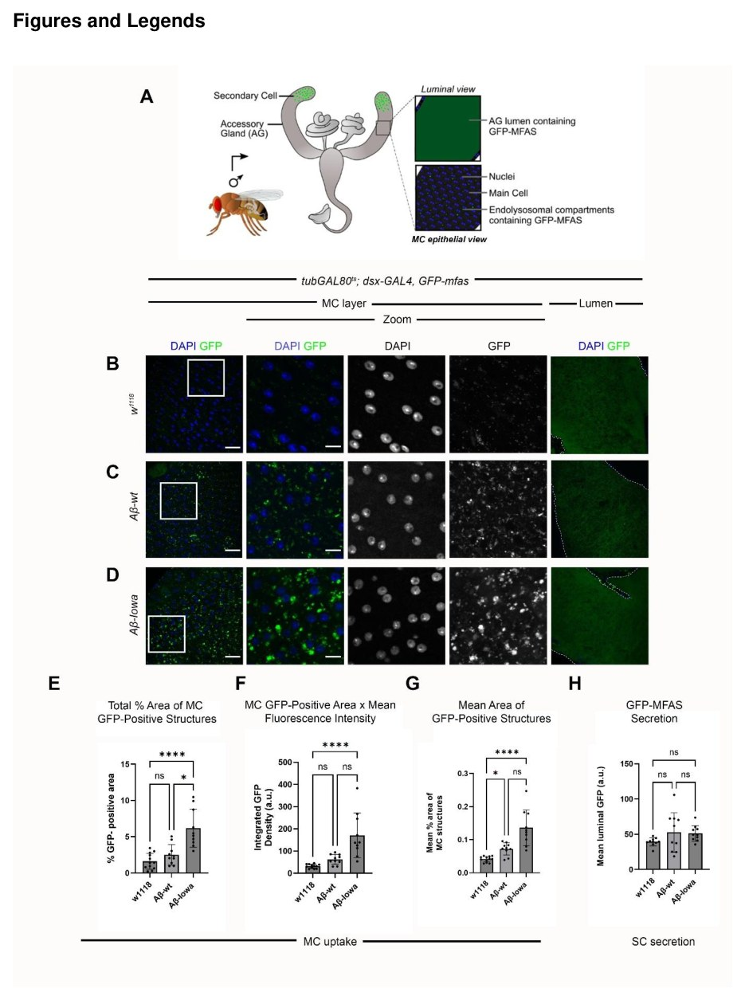</a><figcaption>1-сурет. СК-экспрессияланатын адамның Aβ белоктары қосалқы жыныс безінің (MAG) орталығындағы эпителий жасушаларында эндолизосомалық ақауларды тудырады. A. Эксперименталды стратегияны көрсететін схема. СК-лар тек MAG дистальды ұшында орналасады, бірақ GFP-MFAS және DCG компартименттерінің басқа мазмұнын бездің люменіне секрециялайды, содан кейін олар МК арқылы эндоцитозға ұшырауы мүмкін. B-D. GFP-mfas гендік тұзағын экспрессиялайтын және арнайы СК-ларда басқа трансгенсіз (B) немесе UAS-реттелетін Aβ-wt (C) немесе Aβ-Iowa (D) экспрессиялайтын 6 күндік аталықтардың MAG орта шеніндегі МК эпителий қабаты мен MAG люмені арқылы көлденең қималарының конфокальды кескіндері (ең оң жақтағы панельдер). Үлкейтілген панельдер 3 есе үлкейтуді көрсетеді. E-H. MAG орталық бөлігіндегі МК қабатындағы GFP-MFAS флуоресценциясының жалпы % аумағын (E), интеграцияланған қарқындылықты (аумақ МК-дағы орташа GFP флуоресценция қарқындылығына көбейтілген) (F), GFP-MFAS-пен белгіленген жеке МК компартименттерінің/пункталарының орташа % аумағын (G) және MAG люменіндегі GFP-MFAS флуоресценциясының орташа қарқындылығын (H) көрсететін бағанды диаграммалар. СК-спецификалық Aβ-wt және Aβ-Iowa экспрессиясы МК ішінде құрамында GFP-MFAS бар үлкенірек құрылымдарды тудыратынын ескеріңіз, сонымен қатар Aβ-Iowa МК ішіндегі GFP-MFAS бар жалпы аумақты және интеграцияланған қарқындылықты айтарлықтай арттырады.</figcaption></figure>
<p class="lead">Альцгеймер ауруы кезінде мида амилоидты түйіндер жиналады, бірақ алғашқы ақаулар жасуша ішінде басталады. Зерттеушілер улы сигналдардың арнайы экзосомалар арқылы басқа жасушаларға берілетінін анықтады. Ғалымдар бұл үдерістегі маңызды ақуызды бұғаттағанда, бұзылу каскады тоқтады. Бұл дерттің таралу жолдарын жаңа қырынан түсінуге көмектеседі.</p>
<h2 id="main"><svg class="i" viewBox="0 0 24 24" fill="none" stroke-width="1.5" aria-hidden="true"><path d="M13 6L19 12L13 18" stroke="currentColor" stroke-linecap="round" stroke-linejoin="round"/><path d="M5 6L11 12L5 18" stroke="currentColor" stroke-linecap="round" stroke-linejoin="round"/></svg><span>Басты ойлар</span></h2>
<ul><li>Бета-амилоид жасушаішілік тасымалды бұзып, көрші жасушаларға беріледі.</li><li>Chmp5 ақуызы мен ESCRT-III кешені токсикалық везикулалардың бөлінуін реттейді.</li><li>Rab11-экзосома жолын бұғаттау дрозофиладағы нейродегенерацияны тоқтатады.</li></ul>
<h2 id="more"><svg class="i" viewBox="0 0 24 24" fill="none" stroke-width="1.5" aria-hidden="true"><path d="M13 6L19 12L13 18" stroke="currentColor" stroke-linecap="round" stroke-linejoin="round"/><path d="M5 6L11 12L5 18" stroke="currentColor" stroke-linecap="round" stroke-linejoin="round"/></svg><span>Толығырақ</span></h2>
<p>Альцгеймер ауруы сыртқы амилоидтық тақташалармен және ішкі нейрофибриллярлы шумақтармен сипатталады. Алайда нейрондар жаппай қырылғанға дейін зат тасымалы мен ыдырауына жауап беретін эндолизосомалық жүйе зақымданады. Дрозофила шыбындарының жасушаларында жасалған бұрынғы жұмыстар бета-амилоидтың секрециялық түйіршіктерді бұзып, көрші жасушаларға ақау тарататынын көрсеткен еді.</p>
<p>Жаңа зерттеуде авторлар ESCRT ақуыз кешенінің бұл процестегі рөлін тексерді. ESCRT-III көмекші ақуызын кодтайтын Chmp5 генінің белсенділігі төмендетілген кезде, эндолизосомалық ақаулардың таралуы толығымен тоқтайтыны анықталды. Бұл ақуыз Rab11-экзосомалары түрінде сыртқа шығарылатын везикулалардың түзілуін реттейді.</p>
<p>Сонымен қатар дрозофила көзінде Chmp5 немесе басқа ESCRT-III гендерін басу нейродегенерацияға байланысты өзгерістердің алдын алды. Бұл нәтижелер Rab11-экзосома биогенезі жолының амилоидты патология мен жасуша өлімін байланыстыратынын дәлелдеп, болашақ емдеу әдістеріне бағыт береді.</p>
<blockquote data-palette="error"><p class="bq-title"><svg class="i" viewBox="0 0 24 24" fill="none" stroke-width="1.5" aria-hidden="true"><path d="M20.0429 21H3.95705C2.41902 21 1.45658 19.3364 2.22324 18.0031L10.2662 4.01533C11.0352 2.67792 12.9648 2.67791 13.7338 4.01532L21.7768 18.0031C22.5434 19.3364 21.581 21 20.0429 21Z" stroke="currentColor" stroke-linecap="round"/><path d="M12 9V13" stroke="currentColor" stroke-linecap="round"/><path d="M12 17.01L12.01 16.9989" stroke="currentColor" stroke-linecap="round" stroke-linejoin="round"/></svg>Шектеулер</p><p>Зерттеу тек дрозофила моделінде жүргізілгендіктен, нәтижелерді сүтқоректілерде тексеру қажет.</p></blockquote>
<details class="cut" id="full"><summary class="btn btn-md btn-hex" data-bleep="open"><span class="btn-frame" aria-hidden="true"></span><span class="btn-content"><svg class="i i-chev" viewBox="0 0 24 24" fill="none" stroke-width="1.5" aria-hidden="true"><path d="M9 6L15 12L9 18" stroke="currentColor" stroke-linecap="round" stroke-linejoin="round"/></svg><span>Мақаланың толық аудармасы</span></span></summary><div class="cut-body"><h3>Түйіндеме</h3>
<p>Альцгеймер ауруы (АА) екі гистопатологиялық белгімен сипатталады: жасуша ішкі тау-ақуызы бар нейрофибриллярлық түйіндер және құрамында амилоидтық предшественник ақуызының (APP) арнайы ыдырау өнімі β-амилоид (Aβ) бар жасушадан тыс амилоидтық бляшкалар. Алайда, Aβ туындататын нейрондық патологияның басталуы жасушалар арасында тарала алатын эндолизосомалық трафикке әсер ететін жасушаішілік оқиғаларды қамтиды деп болжануда.</p>
<blockquote data-palette="secondary"><p class="bq-title"><svg class="i" viewBox="0 0 24 24" fill="none" stroke-width="1.5" aria-hidden="true"><path d="M12 11.5V16.5" stroke="currentColor" stroke-linecap="round" stroke-linejoin="round"/><path d="M12 7.51L12.01 7.49889" stroke="currentColor" stroke-linecap="round" stroke-linejoin="round"/><path d="M12 22C17.5228 22 22 17.5228 22 12C22 6.47715 17.5228 2 12 2C6.47715 2 2 6.47715 2 12C2 17.5228 6.47715 22 12 22Z" stroke="currentColor" stroke-linecap="round" stroke-linejoin="round"/></svg>Түсіндірме</p><p>Эндолизосомалық трафик — бұл молекулаларды эндосомалар мен лизосомалар арасында тасымалдайтын және өңдейтін жасушаішілік көлік жүйесі.</p></blockquote>
<p>Нейрондық емес Drosophila қайталама жасушаларындағы (SC) соңғы зерттеулер Aβ ақуыздың агрегациясы оқиғаларына кедергі келтіретінін көрсетті, олар қалыпты реттелетін секреция кезінде сигналдық молекулаларды ерімейтін тығыз ядролы түйіршіктерге (DCG) қаптайды және басқа жасушаларға берілетін эндолизосомалық ақауларды тудырады.</p>
<p>Мұнда SC көмегімен біз көмекші ESCRT-III ақуызы Chmp5 кодтайтын генді нокаут жасау SC DCG компартменттері ішінде кейіннен Rab11-экзосомалар ретінде бөлінетін интралюминальды көпіршіктердің (ILV) түзілуін таңдамалы түрде реттейтінін және Aβ туындататын эндолизосомалық трафик ақауларының таралуын тежейтінін көрсетеміз.</p>
<blockquote data-palette="warning"><p class="bq-title"><svg class="i" viewBox="0 0 24 24" fill="none" stroke-width="1.5" aria-hidden="true"><path d="M12 11.5V16.5" stroke="currentColor" stroke-linecap="round" stroke-linejoin="round"/><path d="M12 7.51L12.01 7.49889" stroke="currentColor" stroke-linecap="round" stroke-linejoin="round"/><path d="M12 22C17.5228 22 22 17.5228 22 12C22 6.47715 17.5228 2 12 2C6.47715 2 2 6.47715 2 12C2 17.5228 6.47715 22 12 22Z" stroke="currentColor" stroke-linecap="round" stroke-linejoin="round"/></svg>Абайлаңыз</p><p>Бұл зерттеу үлгілік организмдерде (Drosophila) орындалғандықтан, бұл механизмдердің адамдардағы рөлін растау үшін қосымша клиникалық зерттеулер қажет.</p></blockquote>
<p>Сонымен қатар, Chmp5 немесе басқа көмекші ESCRT-III гендерін нокаут жасау Drosophila көзіндегі Aβ туындататын, нейродегенерацияға тәуелді морфологиялық ақауларды да басады.</p>
<p>Біз Rab11-экзосома биогенезі жолын басқаратын гендер Aβ туындататын эндолизосомалық трафик ақауларында да, нейродегенерацияға әкелетін жасушалық оқиғаларда да маңызды рөл атқарады деген қорытындыға келдік.</p>
<blockquote data-palette="primary"><p class="bq-title"><svg class="i" viewBox="0 0 24 24" fill="none" stroke-width="1.5" aria-hidden="true"><path d="M12 11.5V16.5" stroke="currentColor" stroke-linecap="round" stroke-linejoin="round"/><path d="M12 7.51L12.01 7.49889" stroke="currentColor" stroke-linecap="round" stroke-linejoin="round"/><path d="M12 22C17.5228 22 22 17.5228 22 12C22 6.47715 17.5228 2 12 2C6.47715 2 2 6.47715 2 12C2 17.5228 6.47715 22 12 22Z" stroke="currentColor" stroke-linecap="round" stroke-linejoin="round"/></svg>Маңызды</p><p>Chmp5 экспрессиясын басу Aβ туындататын эндолизосомалық ақаулардың таралуын бұғаттайды және нейродегенеративті өзгерістерді азайтады.</p></blockquote>
<p>Біздің нәтижелеріміз бұл процестердің өзара байланысты екенін көрсетеді және болашақта АА терапиясын әзірлеу үшін жаңа нысаналы жолдарды ұсына алады.</p>
<h3>Кіріспе</h3>
<p>Альцгеймер ауруы (АА) бүкіл әлем бойынша деменцияның басты себебі болып табылады және 2050 жылға қарай ол 100 миллионнан астам адамға әсер етеді деп болжанууда. Гиперфосфорланған тау-ақуызы бар жасушаішілік нейрофибриллярлық түйіндер және Амилоидты предшественник ақуызының (APP) арнайы кесілу өнімдері болып табылатын Aβ-пептидтерден тұратын жасушасыртылық амилоидты тілімдері АА-ның негізгі гистопатологиялық белгілері болып табылады. Дегенмен, дегенерацияны тудыратын жасушалық-биологиялық триггерлерге қатысты әлі де айтарлықтай пікірталастар бар.</p>
<p>Бір тартымды модель, «жол кептелісі гипотезасы», эндосомалық және лизосомалық жүйе арқылы тасымалдаудағы ақаулар ыдырамайтын Aβ қамтитын жасушаішілік компартменттердің жиналуына әкеледі деп постулаттайды. Бұл эндолизосомалық фенотип басқа жасушаларға берілуі мүмкін және синаптикалық тасымалдауды, құрылымды және тұтастықты бұзудағы бастапқы қадам болып табылады.</p>
<p>Нейрофибриллярлық түйіндермен байланысқан гиперфосфорланған тау-ақуыз эндолизосома арқылы жүретін механизмдер арқылы Aβ және патологиялық Aβ-олигомерлерімен әрекеттесетін көрінеді, бұл тау мен Aβ ауруда қалай функционалды түрде байланысқанын түсіндіру үшін бір ықтимал түсінікті ұсынады. Алайда, жуырға дейін АА-ға байланысты эндолизосомалық ақаулар қалыпты APP процесіне қатысатын арнайы тасымалдау процесінің бұзылуын көрсете ала ма деген сұрақ шешілмеген күйінде қала берді.</p>
<blockquote data-palette="primary"><p class="bq-title"><svg class="i" viewBox="0 0 24 24" fill="none" stroke-width="1.5" aria-hidden="true"><path d="M12 11.5V16.5" stroke="currentColor" stroke-linecap="round" stroke-linejoin="round"/><path d="M12 7.51L12.01 7.49889" stroke="currentColor" stroke-linecap="round" stroke-linejoin="round"/><path d="M12 22C17.5228 22 22 17.5228 22 12C22 6.47715 17.5228 2 12 2C6.47715 2 2 6.47715 2 12C2 17.5228 6.47715 22 12 22Z" stroke="currentColor" stroke-linecap="round" stroke-linejoin="round"/></svg>Маңызды</p><p>Drosophila қосалқы жасушаларындағы APP функцияларын зерттеу реттелетін секрециядағы жетілу мен сапаны бақылау процестерін алғаш рет визуализациялауға көмектесті.</p></blockquote>
<blockquote data-palette="secondary"><p class="bq-title"><svg class="i" viewBox="0 0 24 24" fill="none" stroke-width="1.5" aria-hidden="true"><path d="M12 11.5V16.5" stroke="currentColor" stroke-linecap="round" stroke-linejoin="round"/><path d="M12 7.51L12.01 7.49889" stroke="currentColor" stroke-linecap="round" stroke-linejoin="round"/><path d="M12 22C17.5228 22 22 17.5228 22 12C22 6.47715 17.5228 2 12 2C6.47715 2 2 6.47715 2 12C2 17.5228 6.47715 22 12 22Z" stroke="currentColor" stroke-linecap="round" stroke-linejoin="round"/></svg>Түсіндірме</p><p>Реттелетін секреция — жасушалар секрецияланатын заттарды арнайы түйіршіктерде жинап, белгілі бір сигналдарға жауап ретінде шығаратын процесс.</p></blockquote>
<p>Біз жақында еркек қосалқы безінің (MAG) простата тәрізді жасушалары болып табылатын Drosophila қосалқы жасушаларындағы (ҚЖ) APP функцияларын зерттедік, олар тым үлкейген секреторлық және лизосомалық компартменттерді қамтиды. Бұл жасушаларда реттелетін секреция кезіндегі жетілу және сапаны бақылау қадамдарымен бірге жүретін компартменттер ішіндегі динамикалық оқиғалар алғаш рет визуализацияланды. Жоғары сатыдагы организмдердің жасушаларында секрецияға арналған ақуыздар реттелетін секреторлық компартменттер ішінде тығыз ядролы түйіршіктерге (DCG) жиналады. Бular тек компартменттер плазмалық мембранамен қосылғанда немесе ақаулы компартменттер кринофагия деп аталатын процестерде лизосомалық деградацияға бағытталғанда таралады. ҚЖ-ларда Drosophila трансмембранды APP ортологі, APPL, қалыпты DCG ақуыз агрегациясын ынталандыру үшін қажет. Содан кейін ол DCG агрегаттарын компартменттің шектеуші мембранасынан ажырату үшін Aβ түзілуі үшін қажетті бірінші кесуді жасайтын β-секретазамен кесілуі керек. APPL-дің реттелетін секрециядағы функциялары адамның APP көмегімен алмастырылуы мүмкін, бұл процесте эволюциялық сақталған рөлді көрсетеді.</p>
<p>ҚЖ секреторлық жолында жабайы типтегі Aβ немесе ерте басталған отбасылық АА-ға байланысты Aβ амилогендік мутантты түрлері экспрессияланғанда, APP процесі бұзылады, DCG қалыпты түрде түзілмейді және көбірек компартменттер лизосомалық деградацияға бағытталады. Алайда, бұл бағыттау аберрантты болып табылады және ішінара деградацияланған компартменттер ҚЖ ішінде жиналып, эндолизосомалық тасымалдау ақауын тудырады. Сонымен қатар, бұл аномальды компартменттердің мазмұны секрецияланатын және Aβ экспрессияламайтын басқа көршілес жасушалардың эндолизосомалары ішінде жиналатын көрінеді, олар оларды эндоцитоз жасап, эндолизосомалық фенотипті таратады. Бұл нәтижелер АА кезіндегі Aβ тудырған эндолизосомалық патологиялар аберрантты реттелетін секрециядан туындауы мүмкін екенін болжайды, бұл адамның АА-мен байланысты гендерін ин силико талдауымен расталады.</p>
<blockquote data-palette="warning"><p class="bq-title"><svg class="i" viewBox="0 0 24 24" fill="none" stroke-width="1.5" aria-hidden="true"><path d="M12 11.5V16.5" stroke="currentColor" stroke-linecap="round" stroke-linejoin="round"/><path d="M12 7.51L12.01 7.49889" stroke="currentColor" stroke-linecap="round" stroke-linejoin="round"/><path d="M12 22C17.5228 22 22 17.5228 22 12C22 6.47715 17.5228 2 12 2C6.47715 2 2 6.47715 2 12C2 17.5228 6.47715 22 12 22Z" stroke="currentColor" stroke-linecap="round" stroke-linejoin="round"/></svg>Абайлаңыз</p><p>Эндолизосомалық ақаулардың таралуы туралы қорытындылардың көпшілігі Drosophila модельдерінен алынған, бұл адамның Альцгеймер ауруының патогенезіне тікелей экстраполяция жасауда сақтықты талап етеді.</p></blockquote>
<p>Реттелетін секреторлық компартменттердің жетілуі транс-Гольджи желісінен (TGN) пайда болатын компартменттердің қайта өңделетін эндосомалық сәйкестігіне ауысуын талап етеді, мұны қайта өңделетін эндосомалық маркеp Rab11 біртіндеп иеленуі арқылы бақылауға болады. ҚЖ-дағы реттелетін секреторлық компартменттер интралюминальды везикулаларды (ILV) түзеді, бұл процесс адамның DCG компартменттерінде де сақталған көрінеді (Wang et al., 2025), және бұл везикулалар мамандандырылған Rab11-экзосомалар ретінде секрецияланады.</p>
<p>Атқарған зерттеулер APPL осы ILV-ларға тасымалданатынын және ILV биогенезін реттейтін төрт Эндосомалық сұрыптау кешенінің (ESCRT) арнайы компоненттерін кодтайтын гендердің нокдаун жасалуы ҚЖ-да DCG түзілуін бұзатынын көрсетті.</p>
<p>Сонымен қатар, Aβ және оның олигомерлерінің нейрондардан басқа жасушаларға, соның ішінде басқа нейрондарға өтуі экзосомаларды қамтитын көрінеді.</p>
<p>Сондықтан біз Rab11-экзосомалар жасушалар арасында Aβ тудырған эндолизосомалық тасымалдау ақауларын таратуға қатысуы мүмкін деп болжадық.</p>
<p>Мұнда біз Aβ экспрессиялайтын ҚЖ тудырған эндолизосомалық ақаулар MAG эпителий жасушалары арқылы таралатынын көрсетеміз. Rab11-экзосома түзілуін таңдамалы түрде реттейтін қосымша ESCRT-III ақуызын кодтайтын Chmp5 нокдауны бұл таралуды күшті басады. Chmp5 және басқа қосымша ESCRT-III гендерінің нокдауны шыбын көзінде Aβ экспрессиясы тудырған нейродегенерациямен байланысты морфологиялық ақауларды да басады. Демек, біздің нәтижелеріміз Aβ тудырған реттелетін секрецияның бұзылуынан туындаған эндолизосомалық тасымалдаудағы ақаулар АА-ға байланысты дегенерацияда маңызды рөл атқаруы мүмкін екенін және оларды Rab11-экзосома биогенез аппаратын тежеу арқылы жеңілдетуге болатынын көрсетеді.</p>
<h3>Нәтижелер</h3>
<h4>Секреторлық жасушалар экспрессиялайтын адамның Aβ акуызы қосалқы жыныс безінің (MAG) барлық эпителий жасушаларында эндолизосомалық ақаулар тудырады</h4>
<p>Бұған дейін біз сүтқоректілердің жасушадан тыс матрикс акуызы TGF-eta-induced (TGFBI) шыбын ортологі болып табылатын MFAS DCG акуызының GFP-пен белгіленген нысаны эндогендік ген локусынан экспрессияланған кезде секреторлық жасушаларда (СЖ) жоғары деңгейде таңдамалы түрде өндірілетінін және СЖ DCG-леріне оралатынын көрсеттік (Singh et al., 2025). Екі лопальды MAG әр лопасының дистальды ұшындағы шамамен 40 СЖ-да Aβ экспрессияланған кезде, секрецияланған GFP-MFAS-тың көршілес негізгі жасушаларға (НЖ) сіңірілуі күшейеді және GFP LysoTracker Red-пен боялатын ұлғайған эндолизосомалық компартменттерде жиналады (Singh et al., 2025). Бұл бұл компартменттердің эндоцитоз жасалған DCG акуыздарын қалыпты түрде ыдырата алмайтынын және GFP флуоресценциясын толық сөндіре алмайтын жоғары люминальды pH мәніне ие екенін көрсетеді.</p>
<blockquote data-palette="secondary"><p class="bq-title"><svg class="i" viewBox="0 0 24 24" fill="none" stroke-width="1.5" aria-hidden="true"><path d="M12 11.5V16.5" stroke="currentColor" stroke-linecap="round" stroke-linejoin="round"/><path d="M12 7.51L12.01 7.49889" stroke="currentColor" stroke-linecap="round" stroke-linejoin="round"/><path d="M12 22C17.5228 22 22 17.5228 22 12C22 6.47715 17.5228 2 12 2C6.47715 2 2 6.47715 2 12C2 17.5228 6.47715 22 12 22Z" stroke="currentColor" stroke-linecap="round" stroke-linejoin="round"/></svg>Түсіндірме</p><p>&gt; LysoTracker Red лизосомалық бояғышы мен GFP акуыздық меткалары органеллалар молекулаларды қорыту қабілетін жоғалтқан кезде жасушаішілік қышқыл орта ақауларын бақылауға көмектеседі.</p></blockquote>
<p>Aβ тудырған НЖ эндолизосомалық ақауларының біздің бастапқы талдауымыз тікелей СЖ-ға жақын орналасқан жасушалармен шектелді. Осы НЖ үшін СЖ шығарған эндоцитоз жасалған GFP-MFAS MAG люменіне секрециялануы немесе латеральды мембраналар арқылы жасушалар арасында тасымалдануы мүмкін еді. Люминальды GFP-MFAS таралу фенотипі үшін жауапты екенін растау үшін біз MAG бойындағы эпителий жасушаларының GFP-MFAS қабылдауын зерттедік. Ересек аталық шыбындар алынды, оларда ересек СЖ я дикий типті Aβ (Aβ-wt) немесе амилоидогендік Aβ-Iowa мутантын (Grabowski et al., 2001) секреторлық жолға бағыттау үшін өңделетін N-ұштық ER сигналды тізбегімен біріктіріліп экспрессияланды (Chouhan et al., 2016; Metsla et al., 2022; Singh et al., 2025). MAG-тың СЖ ішінде тек ересектерде экспрессияға температураға сезімтал GAL4 ингибиторы GAL80ts қатысуымен UAS реттейтін трансгендерді dsx-GAL4 арқылы белсендіру арқылы, шыбын шыққан кезде 25oC-тан 29oC-қа ауыстыру арқылы қол жеткізілді, бұл GAL80ts-ті тұрақсыздандырады (Fan et al., 2020).</p>
<p>Бұрын хабарланғандай (Singh et al., 2025), Aβ экспрессиясы СЖ-дағы DCG биогенезі мен эндолизосомалық трафикке әсер етіп, ішінара қышқылданған компартменттер мен лизосомалардың жиналуының артуына, ал Aβ-Iowa жағдайында акуыздардың үлкен DCG-ге жиі толық емес агрегациясына әкелді (S1A-C суреті). Ex vivo препаратталған MAG-тардың орталық бөлігіндегі НЖ эпителий қабатын талдау (1A суреті) СЖ-да Aβ изоформаларын экспрессиялау НЖ қышқыл компартменттерінің мөлшерін арттырғанын және әсіресе Aβ-Iowa үшін осы ұлғайған компартменттер ішінде GFP-MFAS-тың көбірек жиналуына әкелгенін көрсетті (S1D-F суреті). Бұл біздің MAG-тың дистальды бөлігі үшін бұрынғы нәтижелерімізді қайталады және эндолизосомалық ақаулардың без бойымен таралатынын болжады.</p>
<blockquote data-palette="primary"><p class="bq-title"><svg class="i" viewBox="0 0 24 24" fill="none" stroke-width="1.5" aria-hidden="true"><path d="M12 11.5V16.5" stroke="currentColor" stroke-linecap="round" stroke-linejoin="round"/><path d="M12 7.51L12.01 7.49889" stroke="currentColor" stroke-linecap="round" stroke-linejoin="round"/><path d="M12 22C17.5228 22 22 17.5228 22 12C22 6.47715 17.5228 2 12 2C6.47715 2 2 6.47715 2 12C2 17.5228 6.47715 22 12 22Z" stroke="currentColor" stroke-linecap="round" stroke-linejoin="round"/></svg>Маңызды</p><p>&gt; Секреторлық жасушаларда Aβ экспрессиясы қосалқы жыныс безінің барлық аумағында негізгі жасушаларда эндолизосомалық компартменттердің кеңеюіне және GFP-MFAS жиналуына әкеледі.</p></blockquote>
<p>Бұл өзгерістерді жүйелі түрде сандық бағалауға мүмкіндік беру үшін біз GFP-MFAS экспрессиялайтын аталықтардан MAG-тарды фиксирледік, жіңішке жалпақ НЖ эпителий қабатын анықтау үшін оларды DAPI-мен боядық және конфокальды микроскопия көмегімен GFP таралуын бейнеледік (1A суреті). Бұл дистальды СЖ Aβ-wt және Aβ-Iowa экспрессиялаған кезде, экспрессияламайтын бақылаулармен салыстырғанда 6 күндік аталықтардың MAG-тарының орталық және проксимальды аймақтарындағы НЖ тарапынан GFP-MFAS-тың жоғары қабылданғанын көрсетті (1B-D суреті; S2A-C суреті).</p>
<p>MAG ортасында орналасқан эндоцитоз жасалған GFP-MFAS ядролары бойынша анықталған эпителий НЖ көлденең қимасындағы GFP флуоресценциясы бар жалпы ауданның % мөлшерін, интеграцияланған тығыздықты (% аудан x орташа флуоресценция сигналының қарқындылығы) және GFP-MFAS бар әрбір жасушаішілік аймақ үшін орташа % ауданды өлшеу арқылы сандық бағаланды. СЖ Aβ-Iowa экспрессиялаған кезде осы үшеуі де бақылаулармен салыстырғанда айтарлықтай өсті (1E-G суреті). СЖ-да Aβ-wt экспрессияланған MAG-тар үшін де GFP-MFAS бар әрбір аймақтың орташа % ауданында нақты өсу байқалды (1G суреті); көптеген, бірақ барлық бездер үшін емес, флуоресценцияның жалпы % ауданы мен интеграцияланған қарқындылығы да орташа бақылау мәндеріне қатысты өскен сияқты болды (1E және 1F суреті), бірақ үлкен өзгергіштікке байланысты бұл өзгерістердің ешқайсысы маңыздылыққа жетпеді. Екі Aβ генотипі үшін де, бақылаумен салыстырғанда, GFP бар НЖ құрылымдарының саны мен орташа флуоресценттік сигнал қарқындылығы өзгерген жоқ немесе Aβ-Iowa жағдайында флуоресценция қарқындылығы үшін аздап өсті (S2D және S2E суреті). Жалпы алғанда, бұл нәтижелер СЖ-да Aβ экспрессиясы СЖ-ның белгіленген DCG жүгі GFP-MFAS-ты жинайтын НЖ эндолизосомалық компартменттерінің кеңеюін туындататынын растайды.</p>
<blockquote data-palette="warning"><p class="bq-title"><svg class="i" viewBox="0 0 24 24" fill="none" stroke-width="1.5" aria-hidden="true"><path d="M12 11.5V16.5" stroke="currentColor" stroke-linecap="round" stroke-linejoin="round"/><path d="M12 7.51L12.01 7.49889" stroke="currentColor" stroke-linecap="round" stroke-linejoin="round"/><path d="M12 22C17.5228 22 22 17.5228 22 12C22 6.47715 17.5228 2 12 2C6.47715 2 2 6.47715 2 12C2 17.5228 6.47715 22 12 22Z" stroke="currentColor" stroke-linecap="round" stroke-linejoin="round"/></svg>Абайлаңыз</p><p>&gt; Нәтижелер модельдік ағзаларда (Drosophila melanogaster) алынды, сондықтан механизмдерді адам патологиясына тікелей көшіру дәрежесі қосымша зерттеулерді талап етеді.</p></blockquote>
<p>MAG люменінің орталық аймағы да осы әртүрлі генетикалық фонда суретке түсіріліп, секрецияланған GFP-MFAS флуоресценция деңгейлері Singh et al. (2025) бойынша өзгертілген хаттама көмегімен өлшенді (1A-D және 1H суреті). Aβ-wt және Aβ-Iowa үшін бақылауларға қарағанда көбірек өзгермелі флуоресценция деңгейлері байқалды; кейбір бездерде біз бұрын хабарлағанымыздай (Singh et al., 2025) жоғары деңгейдегі GFP-MFAS болды; алайда жалпы алғанда, осы талдау арқылы өлшенгендей секрецияның айтарлықтай өсуі болған жоқ (1H суреті), бұл НЖ-дағы эндолизосомалық өзгерістердің түсіндірмесі ретінде жоғары секрецияны жоққа шығарады.</p>
<p>GFP-MFAS-тың СЖ секрециясы Aβ тудырған НЖ-ға тасымалдану үшін қажет екенін растау үшін біз СЖ-да BMP сигнализациясының теріс транскрипциялық реттеушісі Dad-ты Aβ-wt немесе Aβ-Iowa мутантымен бірге экспрессияладық (2 сурет). Аутокринді BMP сигнализациясы СЖ люминальды секрециясын ынталандырады және бұл Dad арқылы басылады (Corrigan et al., 2014; Redhai et al., 2016). Aβ-wt және Dad-ты бірге экспрессиялайтын бір де бір ересек аталық шыбын шықпады, бұл шамамен dsx-GAL4/GAL80ts жүйесінің бақылауымен даму кезіндегі әлсіз экспрессияның синтетикалық өлімге әкелетініне байланысты. Соған қарамастан, Aβ-Iowa экспрессиялайтын СЖ-да Dad экспрессиясы MAG люменіндегі GFP-MFAS деңгейлерін төмендетті және бұл біріктірілген акуыздың НЖ-ға сіңірілуін күрт азайтты (2 сурет).</p>
<p>Қорытындылай келе, біздің деректеріміз MC клеткалары SC бөліп шығаратын DCG ақуыздарын эндоцитозға ұшырататынын және бұл қармау процесі SC клеткалары жабайы типтегі немесе амилоидогенді мутантты Aβ экспрессиялағанда күшейетінін және/немесе деградациясы тежелетінін қатаң түрде растайды. Бұл MC эндолизосомалық компартменттерінің ұлғаюына әкеледі, олардың құрамында деградацияға ұшырамаған флуоресцентті GFP-MFAS жоғары деңгейлері болады және олар сөндірілмейді, бұл ықтимал түрде осы ақаулы компартменттердің pH деңгейінің жоғарылауына байланысты.</p>
<blockquote data-palette="primary"><p class="bq-title"><svg class="i" viewBox="0 0 24 24" fill="none" stroke-width="1.5" aria-hidden="true"><path d="M12 11.5V16.5" stroke="currentColor" stroke-linecap="round" stroke-linejoin="round"/><path d="M12 7.51L12.01 7.49889" stroke="currentColor" stroke-linecap="round" stroke-linejoin="round"/><path d="M12 22C17.5228 22 22 17.5228 22 12C22 6.47715 17.5228 2 12 2C6.47715 2 2 6.47715 2 12C2 17.5228 6.47715 22 12 22Z" stroke="currentColor" stroke-linecap="round" stroke-linejoin="round"/></svg>Маңызды</p><p>SC клеткаларындағы Aβ экспрессиясы MC клеткаларының өзгерген DCG ақуыздарын эндоцитоз жасауына және олардың pH деңгейі жоғарылаған эндолизосомалық компартменттерінің ұлғаюына әкеледі.</p></blockquote>
<h4>Aβ изоформалары жетіліп келе жатқан DCG компартменттерінде DCG құрамына бірігеді</h4>
<p>SC клеткаларындағы Aβ экспрессиясының GFP-MFAS тасымалдануына және эндолизосомалық ақаулардың MC клеткаларына таралуына әсері біздің прецеденттік бақылауларымызға сәйкес келеді: Aβ GFP-MFAS агрегациясына және болжам бойынша SC клеткаларындағы басқа секрецияланатын DCG ақуыздарына, ықтимал түрде аберрантті мембрана-агрегат өзара әрекеттесулері арқылы әсер етеді, бұл секрециядан кейін MC клеткаларының осы ақуыздарды қармауын күшейтеді.</p>
<p>Aβ пептидтерінің тікелей DCG құрамына кіретінін зерттеу үшін біз осы пептидтерге арналған бұрын расталған 6E10 антиденесін қолдандық (Ray et al., 2017). Бұл антидене адамның Aβ пептидтерімен және APP-мен айқас әрекеттеседі, бірақ Drosophila APPL-мен әрекеттеспейді.</p>
<p>Антидене MAG бұлшықет капсуласының айналасында жоғары деңгейдегі фондық боялуды тудырды (3A-сурет), бұл жұқа MC қабатындағы Aβ локализациясын бағалауды қиындатты. Соған қарамастан, Aβ-wt пен Aβ-Iowa екеуі де SC ішіндегі GFP-MFAS оң DCG көпшілігімен күшті колокализация жасады, дегенмен антиденелердің боялу қарқындылығы әртүрлі DCG арасында айтарлықтай өзгеріп тұрды (3-сурет).</p>
<p>Біз SC клеткаларында экспрессияланатын Aβ DCG құрамына қосылады және DCG компартментінің жетілуін өзгертеді деген қорытындыға келдік. Бұл клеткалар секрециялаған кезде, Aβ-ның MFAS DCG ақуызына әсері MAG люменінде сақталады немесе қайта қалпына келеді, нәтижесінде MFAS MC клеткаларымен аномальды түрде эндоцитозға ұшырап, олардың эндолизосомалық трафигін бұзады.</p>
<h4>SC экзосомалары DCG ақуыздарымен бірге MC клеткаларымен эндоцитоздалады</h4>
<p>SC DCG компартменттері сонымен қатар MAG люменіне Rab11-экзосомалар ретінде секрецияланатын ILV түзеді. Біз бұл экзосомалардың MC клеткаларымен эндоцитоздалатынын және бұл процеске SC клеткаларындағы Aβ экспрессиясы әсер ететінін зерттедік. Біз GFP-MFAS экспрессиялайтын SC клеткаларында Rab11-экзосомаларды белгілейтін адам экзосома маркери CD63-тің mCherry-мен белгіленген формасын бірлесіп экспрессияладық, осылайша біз MC клеткаларындағы GFP-MFAS бар компартменттерді, сондай-ақ эндоцитозға ұшыраған экзосомаларды онай анықтай алдық. Біз GFP-MFAS, CD63-mCherry және Aβ-Iowa трансгендері, олардың барлығы dsx-GAL4-пен бірдей хромосомада орналасқан, бірлесіп экспрессияланған аталықтарды ала алмадық. Дегенмен, CD63-mCherry бақылау MAG-тарында да, Aβ-wt экспрессиялайтын SC бар MAG-тарда да MC ішінде локализацияланып, жиі GFP-MFAS-пен колокализация жасады (4-сурет).</p>
<blockquote data-palette="secondary"><p class="bq-title"><svg class="i" viewBox="0 0 24 24" fill="none" stroke-width="1.5" aria-hidden="true"><path d="M12 11.5V16.5" stroke="currentColor" stroke-linecap="round" stroke-linejoin="round"/><path d="M12 7.51L12.01 7.49889" stroke="currentColor" stroke-linecap="round" stroke-linejoin="round"/><path d="M12 22C17.5228 22 22 17.5228 22 12C22 6.47715 17.5228 2 12 2C6.47715 2 2 6.47715 2 12C2 17.5228 6.47715 22 12 22Z" stroke="currentColor" stroke-linecap="round" stroke-linejoin="round"/></svg>Түсіндірме</p><p>Экзосомалар — клеткааралық байланыс үшін бөлінетін микроскопиялық көпіршіктер, ал олардың CD63 маркері олардың ағзадағы жолын қадағалауға көмектеседі.</p></blockquote>
<p>Сонымен қатар, GFP-MFAS сигналы үшін сияқты (1B-D және S1D-F суреттер), Aβ-wt экспрессиясы MC клеткаларында CD63-mCherry-дің диффузиялық таралуына әкелді, бұл осы клеткалардағы эндолизосомалық компартменттердің ұлғаюына сәйкес келеді. Демек, SC клеткаларынан шығатын экзосомалардың MC клеткаларына эндоцитозы GFP-MFAS-пен бірге жүреді. Бұл жабайы типтегі MAG-тарда, сондай-ақ MC эндолизосомалары SC клеткаларына тән Aβ экспрессиясымен бұзылған MAG-тарда да орын алады.</p>
<blockquote data-palette="warning"><p class="bq-title"><svg class="i" viewBox="0 0 24 24" fill="none" stroke-width="1.5" aria-hidden="true"><path d="M12 11.5V16.5" stroke="currentColor" stroke-linecap="round" stroke-linejoin="round"/><path d="M12 7.51L12.01 7.49889" stroke="currentColor" stroke-linecap="round" stroke-linejoin="round"/><path d="M12 22C17.5228 22 22 17.5228 22 12C22 6.47715 17.5228 2 12 2C6.47715 2 2 6.47715 2 12C2 17.5228 6.47715 22 12 22Z" stroke="currentColor" stroke-linecap="round" stroke-linejoin="round"/></svg>Абайлаңыз</p><p>Байқалатын эндолизосомалық тасымалдау бұзылыстары дрозофила модельдерінде алынды, бұл адам патологиясына тікелей экстраполяция жасауда сақтықты талап етеді.</p></blockquote>
<h4>SC-дағы Rab11-экзосома биогенезінің реттегіші Chmp5 экспрессиясын тежеу Aβ тудырған эндолизосомалық ақаулардың MC-ға таралуын басады</h4>
<p>Біздің алдыңғы талдауымыз SC-дағы Aβ экспрессиясы агрегацияланған DCG ақуыздарының мембранадан диссоциациялануын басатынын көрсетті — бұл DCG-дің қалыпты жетілуінің маңызды кезеңі, нәтижесінде ақаулы DCG компартменттері лизосомаларға қалыпты тасымалданбайды және аберрантты түрде секрецияланады. DCG компартменттеріндегі ILV-лер DCG-мен компартменттің жетілу процесі кезінде де, одан кейін де байланысты болады. Шынында да, бұл ILV-лер DCG биогенезінде рөл атқарады. Біз Rab11-экзосомалар MC-дағы Aβ тудырған эндолизосомалық тасымалдау ақауларын күшейтуі мүмкін деп болжадық, өйткені Aβ-ны экспрессиялайтын SC-дағы мембраналар мен GFP-MFAS құрамындағы ақуыз агрегаттары арасындағы тұрақтанған өзара әрекеттесулер осы жасушалардан тыс жерде сақталуы мүмкін.</p>
<p>Мұны тексеру үшін біз Aβ-пептидтерінің қатысуымен және жоқтығында SC-да Rab11-экзосома биогенезін тежедік. DCG компартменттеріндегі ILV биогенезі төрт ESCRT кешенінің негізгі компоненттерімен басқарылады, олар сондай-ақ кешкі эндосомалық экзосомаларды генерациялай алады; алайда, біз бұған дейін шыбын және адам жасушаларында ESCRT-III қосымша ақуыздары кешкі эндосомалардағы экзосома биогенезіне қарағанда Rab11-экзосомалардың қалыптасуына таңдамалы түрде қатысатынын көрсеткенбіз.</p>
<blockquote data-palette="primary"><p class="bq-title"><svg class="i" viewBox="0 0 24 24" fill="none" stroke-width="1.5" aria-hidden="true"><path d="M12 11.5V16.5" stroke="currentColor" stroke-linecap="round" stroke-linejoin="round"/><path d="M12 7.51L12.01 7.49889" stroke="currentColor" stroke-linecap="round" stroke-linejoin="round"/><path d="M12 22C17.5228 22 22 17.5228 22 12C22 6.47715 17.5228 2 12 2C6.47715 2 2 6.47715 2 12C2 17.5228 6.47715 22 12 22Z" stroke="currentColor" stroke-linecap="round" stroke-linejoin="round"/></svg>Маңызды</p><p>SC-дағы Chmp5 нокдауны Aβ экспрессиясына қарамастан, MC-ның GFP-MFAS сіңіруін күрт төмендетеді, бұл Rab11-экзосомалардың DCG компоненттерін жасушааралық тасымалдаудағы маңызды рөлін көрсетеді.</p></blockquote>
<p>Осы ақуыздарды кодтайтын гендердің нокдауны DCG компартменттерінде ILV түзілуін басады, бірақ негізгі ESCRT нокдаундарынан айырмашылығы, кешкі эндосомалар мен лизосомалардағы убиквитинденген ақуыздардың ILV-ге тәуелді деградациясына айтарлықтай әсер етпейді.</p>
<p>Сондықтан біз SC-дағы қосымша ESCRT-III компоненті Chmp5 генінің нокдаунынан кейін GFP-MFAS-тың MC-ға ауысуын бағаладық. Бұрын біз SC-да ксантиндегидрогеназа ферментін кодтайтын rosy көз пигментациясы геніне бағытталған бақылау RNAi-ін экспрессиялағанда, бұл MC-дағы GFP-MFAS деңгейін арттыратынын анықтадық. Сондықтан біз Drosophila гені емес, mCherry-ге бағытталған баламалы RNAi-ді қолдандық; Aβ болмаған кезде ол да экспрессияланбайтын бақылау топтарымен салыстырғанда MC-ның GFP-MFAS сіңіруін күшейткендей болды (5A, 5C-E суреттерін 1-суретпен салыстырыңыз), бірақ rosy-RNAi-ге қарағанда азырақ дәрежеде. Бұл нәтиже және басқа зерттеулер SC-дағы RNAi процессинг аппаратын белсендіру GFP-MFAS-тың жасушааралық ауысуын күшейтуі мүмкін екенін болжайды. Осы күшейтуге қарамастан, Chmp5 нокдауны біз қолданған барлық үш талдау бойынша өлшенгендей, тек SC-да жабайы типтегі Aβ немесе Aβ-Iowa экспрессияланған MAG-тарда ғана емес, тіпті Aβ экспрессияламайтын жасушаларда да ішкі GFP-MFAS деңгейін қатты басты (5-сурет). Бұл манипуляция MC эндолизосомалық компартменттеріндегі GFP флуоресценциясының орташа қарқындылығын да төмендетті, ал SC-да Aβ экспрессияланбаған немесе Aβ-wt экспрессияланған MAG-тар үшін MC-да анықталған ірі эндолизосомалық құрылымдардың саны да азайды (SN-сурет). Бұл деректер SC-дағы Chmp5 нокдауны GFP-MFAS эндоцитозын қатты төмендететінін және/немесе оның MC-дағы деградациясын күшейтетінін көрсетеді.</p>
<blockquote data-palette="secondary"><p class="bq-title"><svg class="i" viewBox="0 0 24 24" fill="none" stroke-width="1.5" aria-hidden="true"><path d="M12 11.5V16.5" stroke="currentColor" stroke-linecap="round" stroke-linejoin="round"/><path d="M12 7.51L12.01 7.49889" stroke="currentColor" stroke-linecap="round" stroke-linejoin="round"/><path d="M12 22C17.5228 22 22 17.5228 22 12C22 6.47715 17.5228 2 12 2C6.47715 2 2 6.47715 2 12C2 17.5228 6.47715 22 12 22Z" stroke="currentColor" stroke-linecap="round" stroke-linejoin="round"/></svg>Түсіндірме</p><p>RNAi (РНҚ интерференциясы) — ген функциясын зерттеу үшін нақты бір ген экспрессиясын «өшіру» немесе төмендету әдісі.</p></blockquote>
<p>MAG люменіндегі GFP-MFAS деңгейін бағалау Chmp5 нокдаунының Aβ-wt экспрессиялайтын SC арқылы GFP-MFAS секрециясын төмендетпегенін (5H және 5L-суреттер) және шын мәнінде Aβ-Iowa үшін оны арттырғандай болғанын (5N, 5R-суреттер) көрсетті, бұл MC сіңіруінің өзгеруі люмендік GFP-MFAS-тың төмендеуімен түсіндірілмейтінін көрсетеді. Бақылау бездерінде Chmp5 нокдауны GFP-MFAS секрециясының төмендеуіне әкелді (5F-сурет), дегенмен MC сіңіруіне тежегіш әсері күштірек көрінді (5C-E суреттер). Жалпы алғанда, бұл деректер Rab11-экзосомалар және/немесе олардың ILV прекурсорлары DCG компоненттерінің жасушадан жасушаға ауысуында және Aβ тудырған эндолизосомалық ақаулардың таралуында маңызды рөл атқаратынын көрсетеді.</p>
<p>Кейбір, бірақ барлығы емес, ESCRT нокдаундары SC-да ірі DCG өндірісін тежейді, бұл осы компартменттердің лизосомаларға бағытталуын арттыруы және сондықтан Aβ экспрессиялайтын жасушаларда туындайтын эндолизосомалық ақауларда өзгерістер тудыруы мүмкін. Сондықтан біз Chmp5 нокдауны фенотиптік таралуға әсерінен бөлек, секреция үшін SC сапасын бақылау жолында эндолизосомалық тасымалдауды өзгертті ме немесе Aβ-wt немесе Aβ-Iowa экспрессиялайтын SC-да байқалған эндолизосомалық тасымалдау ақауларын модификациялады ма, соны зерттедік (6-сурет).</p>
<p>SC-да Aβ болмаған кезде экспрессияланғанда, Chmp5-RNAi осы жасушалардағы қышқылданған компартменттер санын және лизосомалық ауданды арттырды (6A, 6B, 6I, 6J-суреттер), мүмкін жасушалар қалыптан тыс DCG-лердің жоғары үлесін қамтығандықтан (6H-сурет). Сондай-ақ бақылау топтарымен салыстырғанда MC арқылы GFP-MFAS сіңіруінің төмендеу үрдісі байқалды (6K-сурет), дегенмен бұл талдау MAG ортасындағы сіңіру талдауынан айырмашылығы, айтарлықтай өзгерісті анықтау үшін жеткілікті сезімтал болмады (5F-сурет).</p>
<p>Aβ-wt немесе Aβ-Iowa-мен бірге экспрессияланғанда (6C-F суреттер), MC GFP-MFAS сіңіруінің төмендеуі байқалды (6K-сурет, 5H-K және 5N-Q суреттерін қараңыз). Алайда, қалыптан тыс DCG-лердің, қышқылданған компартменттердің немесе лизосомалық ауданның айқын азаюы байқалмады, дегенмен Aβ-Iowa экспрессиялайтын жасушаларда DCG компартменттерінің саны артқан (6G-J суреттер). Сондықтан, SC-да Chmp5 нокдауны арқылы Aβ тудырған DCG ақауларын жасушалық-автономды фенотиптік басу біздің стандартты талдауларымызбен анықталмады.</p>
<blockquote data-palette="warning"><p class="bq-title"><svg class="i" viewBox="0 0 24 24" fill="none" stroke-width="1.5" aria-hidden="true"><path d="M12 11.5V16.5" stroke="currentColor" stroke-linecap="round" stroke-linejoin="round"/><path d="M12 7.51L12.01 7.49889" stroke="currentColor" stroke-linecap="round" stroke-linejoin="round"/><path d="M12 22C17.5228 22 22 17.5228 22 12C22 6.47715 17.5228 2 12 2C6.47715 2 2 6.47715 2 12C2 17.5228 6.47715 22 12 22Z" stroke="currentColor" stroke-linecap="round" stroke-linejoin="round"/></svg>Абайлаңыз</p><p>Зерттеу жеміс шыбыны моделінде жүргізілді; ақуыздардың жасушааралық ауысуы бойынша нәтижелерді сүтқоректілерге экстраполяциялауда сақтық таныту қажет.</p></blockquote>
<p>Негізінде, SC-дағы DCG қамтитын барлық компартменттер Rab11-оң болып табылады және бұған Chmp5 нокдауны да, Aβ изоформаларының артық экспрессиясы да әсер етпейді. Rab11 генінің локусында N-терминалды YFP ақуыз синтезін алып жүретін шыбындарды пайдаланып, біз DCG компартменттерінің санында кейбір шағын ауытқулар болса да (SN-сурет), барлық зерттелген генотиптер үшін олардың DCG компартменттері Rab11-мен белгіленгенін растадық (SN-сурет). Бұл DCG жетілу процесінің Rab11-оң рециркуляциялаушы эндосома идентификаторына ауысуын қамтитын кезеңі қалыпты өтетінін көрсетеді (SN-сурет).</p>
<p>YFP-Rab11 сонымен қатар осы компартменттердің ішіндегі ішкі люминальды везикулалардың (ILV) субпопуляциясын таңбалайды. Біз бұған дейін ILV биогенезінің өлшемі ретінде флуоресцентті пункталары бар Rab11-оң компартменттердің үлесін бағалаған болатынбыз.</p>
<h4>Chmp5 нокдаунының ILV биогенезіне әсері</h4>
<p>Бұл талдау Chmp5 нокдаунының Aβ-wt бар және жоқ жағдайында да бақылау тобымен салыстырғанда ILV бар компартменттердің үлесін төмендететінін растады (<a class="figref" href="#fig-S4" data-fig="S4">Сурет S4</a>A-D және S4H). Aβ-Iowa экспрессиялайтын SC үшін ILV бар барлық Rab11-оң компартменттерді санау қиынға соқты, өйткені бұл ILV-лердің көпшілігі шекаралық мембрананың жанында орналасқан және YFP шоғырлануы ретінде көрінеді (<a class="figref" href="#fig-S4" data-fig="S4">Сурет S4</a>E және S4H). Chmp5 нокдауны орталықта орналасқан ILV-лердің санын арттырды (<a class="figref" href="#fig-S4" data-fig="S4">Сурет S4</a>I), бұл осы генетикалық фонда ILV бар DCG компартменттерінің санын неліктен аздап арттырғанын түсіндіреді (<a class="figref" href="#fig-S4" data-fig="S4">Сурет S4</a>F және S4H).</p>
<figure class="fig" data-n="S4" id="fig-S4"><a class="fig-img" href="../../media/2026-09-23/rab11-exosome-biogenesis-regulators-mediate-a-induced-interc-fS4.jpg" data-zoom title="Суретті ашу">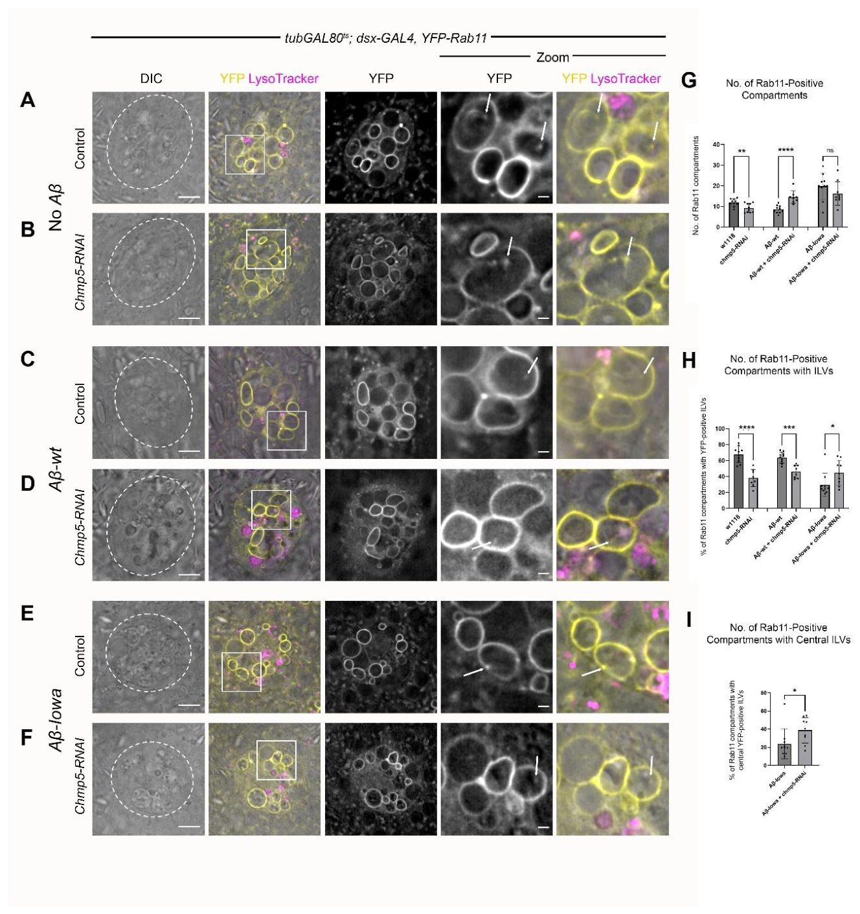</a><figcaption>4-сурет. SC-спецификалық Chmp5 нокдауны Aβ экспрессиялайтын жасушаларда DCG компартментінің бірегейлігін өзгертпейді (6-суретке қатысты)</figcaption></figure>
<blockquote data-palette="primary"><p class="bq-title"><svg class="i" viewBox="0 0 24 24" fill="none" stroke-width="1.5" aria-hidden="true"><path d="M12 11.5V16.5" stroke="currentColor" stroke-linecap="round" stroke-linejoin="round"/><path d="M12 7.51L12.01 7.49889" stroke="currentColor" stroke-linecap="round" stroke-linejoin="round"/><path d="M12 22C17.5228 22 22 17.5228 22 12C22 6.47715 17.5228 2 12 2C6.47715 2 2 6.47715 2 12C2 17.5228 6.47715 22 12 22Z" stroke="currentColor" stroke-linecap="round" stroke-linejoin="round"/></svg>Маңызды</p><p>Chmp5 нокдауны DCG компартменттерінде ILV түзілуін азайтады, сонымен қатар Aβ-Iowa экспрессияланған кезде ILV-лердің компартмент орталығына қарай ығысуы байқалады.</p></blockquote>
<p>Осылайша, SC-дегі Chmp5 нокдауны DCG компартменттерінде ILV түзілуін селективті түрде төмендетеді, алайда Aβ изоформалары артық экспрессияланған кезде осы компартменттердің жетілуі мен сапасын бақылауға әсер ететін кез келген кейінгі әсерлер біз қолданатын стандартты талдаулар арқылы анықталмады. Дегенмен, бұл нокдаун GFP-MFAS-тың басқа эпителий жасушаларына тасымалдануын және Aβ тудыратын эндолизосомалық ақаулардың осы жасушаларға таралуын қатты басады. Қызығы, Chmp5 нокдауны тіпті Aβ экспрессияламайтын SC-ден де тасымалдануды тежейтін сияқты болғандықтан, бұл экзосомаға тәуелді процесс физиологиялық тұрғыдан жұмыс істеуі мүмкін, бірақ ол Aβ изоформаларының қатысуымен күштірек артады.</p>
<blockquote data-palette="secondary"><p class="bq-title"><svg class="i" viewBox="0 0 24 24" fill="none" stroke-width="1.5" aria-hidden="true"><path d="M12 11.5V16.5" stroke="currentColor" stroke-linecap="round" stroke-linejoin="round"/><path d="M12 7.51L12.01 7.49889" stroke="currentColor" stroke-linecap="round" stroke-linejoin="round"/><path d="M12 22C17.5228 22 22 17.5228 22 12C22 6.47715 17.5228 2 12 2C6.47715 2 2 6.47715 2 12C2 17.5228 6.47715 22 12 22Z" stroke="currentColor" stroke-linecap="round" stroke-linejoin="round"/></svg>Түсіндірме</p><p>Нокдаун — ген экспрессиясын төмендету арқылы ақуыз функциясын зерттеуге мүмкіндік беретін генетикалық әдіс.</p></blockquote>
<h4>ESCRT-III қосалқы гендерінің нокдауны Aβ тудырған көздегі нейродегенерацияны басады</h4>
<p>Біздің зерттеулеріміз көрсеткендей, SC-да жабайы типтегі немесе оның мутанттық формаларының Aβ экспрессиясы АА (Альцгеймер ауруы) басталуына қатысы болуы мүмкін кем дегенде үш фенотипті тудырады: DCG компартменттеріндегі мембраналардан агрегацияланған ақуыздардың диссоциациясының бұзылуы, эндолизосомалық трафиктегі ақаулар және бұл ақаулардың SC секрециясы мен MC арқылы эндоцитоз арқылы басқа жасушаларға таралуы. DCG компартменттерінде ILV түзілуін және демек, Rab11-экзосомалардың секрециясын тежейтін Chmp5 нокдауны таралу фенотипін қатты басады, бірақ SC DCG және эндолизосомалық жүйесіндегі Aβ тудырған ақауларға мардымсыз әсер етеді (егер мүлдем әсер етсе).</p>
<p>Біз Aβ тудырған реттелетін секреция ақаулары АА кезінде байқалатын нейродегенеративті фенотиптерді бастауы мүмкін деп болжадық. Осылайша, SC-дағы осы ақаулардың кез келгенін басатын генетикалық манипуляциялар нейрондардағы Aβ экспрессиясы арқылы қоздырылатын дегенерацияны да тежей алады.</p>
<blockquote data-palette="primary"><p class="bq-title"><svg class="i" viewBox="0 0 24 24" fill="none" stroke-width="1.5" aria-hidden="true"><path d="M12 11.5V16.5" stroke="currentColor" stroke-linecap="round" stroke-linejoin="round"/><path d="M12 7.51L12.01 7.49889" stroke="currentColor" stroke-linecap="round" stroke-linejoin="round"/><path d="M12 22C17.5228 22 22 17.5228 22 12C22 6.47715 17.5228 2 12 2C6.47715 2 2 6.47715 2 12C2 17.5228 6.47715 22 12 22Z" stroke="currentColor" stroke-linecap="round" stroke-linejoin="round"/></svg>Маңызды</p><p>ESCRT-III қосалқы гендерінің (Chmp5, Ist1, Chmp1) нокдауны Aβ тудырған нейродегенерацияны басады, бұл Rab11-экзосомалар биогенезі жолының АА патогенезіндегі шешуші рөлін көрсетеді.</p></blockquote>
<p>Бұл гипотезаны тексеру үшін біз АА-мен байланысты нейродегенерацияны зерттеу үшін кеңінен қолданылатын шыбын көзіндегі нейродегенерация моделін қолдандық. Дамып келе жатқан Drosophila көзінде көзге тән GMR-GAL4 драйверін қолдану арқылы жабайы типтегі Aβ немесе Aβ-Iowa экспрессиясы ересек көз морфологиясы қалыптасу кезеңінде жасушалардың дегенерациясына байланысты омматидийлердің қалыпты гексагональды құрылымын бұзады (7-сурет).</p>
<p>АА-мен байланысты нейродегенерацияның бірнеше генетикалық және фармакологиялық супрессорлары, сондай-ақ секреция модификаторлары бұл фенотиптерді ішінара құтқарады. Сонымен қатар, Rab11 Drosophila фоторецепторларында апикальды трафик пен секрецияда маңызды рөл атқаратыны белгілі, бұл бұл жасушалардың, көптеген басқа жасуша түрлері сияқты, SC-да бар негізгі реттелетін секреторлық биогенез аппаратына ие екендігі туралы идеямен сәйкес келеді.</p>
<p>Біз екі түрлі GMR-GAL4 инсерциясының бақылауымен Aβ-wt және Aβ-Iowa экспрессиясы ретсіз көз фенотипіне әкелетінін растадық (7-сурет).</p>
<blockquote data-palette="secondary"><p class="bq-title"><svg class="i" viewBox="0 0 24 24" fill="none" stroke-width="1.5" aria-hidden="true"><path d="M12 11.5V16.5" stroke="currentColor" stroke-linecap="round" stroke-linejoin="round"/><path d="M12 7.51L12.01 7.49889" stroke="currentColor" stroke-linecap="round" stroke-linejoin="round"/><path d="M12 22C17.5228 22 22 17.5228 22 12C22 6.47715 17.5228 2 12 2C6.47715 2 2 6.47715 2 12C2 17.5228 6.47715 22 12 22Z" stroke="currentColor" stroke-linecap="round" stroke-linejoin="round"/></svg>Түсіндірме</p><p>GMR-GAL4 — бұл Drosophila көзінде гендердің мақсатты экспрессиясы үшін қолданылатын генетикалық жүйе, ол нақты ақуыздардың тіндердің құрылымына әсерін зерттеуге мүмкіндік береді.</p></blockquote>
<p>Бұрын «кедір-бұдыр көз» фенотиптерін зерттеу үшін аналитикалық құралдар әзірленген, алайда біз олардың біздің стереомикроскопиялық кескіндерімізбен нашар жұмыс істейтінін анықтадық. Сондықтан біз осы әдістердің элементтерін бейімдедік және шамамен 250 орталық омматидий үшін көздің гексагональды құрылымының тұрақтылығын өлшеу үшін автоматтандырылған омматидийлерді талдау құбырын әзірледік. Бұл көз ішіндегі орталық эллиптикалық аймақта бақылау көздері мен Aβ экспрессиялайтын көздердегі әрбір элементар көз үшін ең жақын алты омматидийге қатысты бұрышты анықтауға мүмкіндік берді. Біз UAS-трансген инсерциясын қамтымайтын шыбындармен шағылыстырғанда әрбір GMR-GAL4 желісі үшін эталондық қисықты орнаттық; ол әрқайсысы 60 градустық бұрышпен бөлінген алты айқын шыңды қамтыды (SN-сурет). Осы эталондық қисықпен салыстырғанда, біз Aβ экспрессиялайтын көздердегі омматидийлердің ретсіз орналасуын бақылау lacZ трансгенін экспрессиялайтын шыбындардың көздерінен анық ажыратуға болатынын анықтадық (SN-сурет).</p>
<p>Бақылау РНҚ-интерференциясының (mCherry-RNAi) экспрессиясы бақылау көздеріндегі омматидийлердің тұрақтылығына да, жабайы типтегі Aβ және Aβ-Iowa тудырған ретсіздікке де әсер етпеді (SN-сурет, 8A, 8B, 8D, 8E, 8F және 8H). Керісінше, Chmp5-RNAi жабайы типтегі Aβ тудырған ретсіздікті басты, бірақ Aβ-Iowa экспрессиялайтын көздерде емес (8C, 8D, 8G және 8H-суреттер). Жалғыз экспрессияланғанда, ол үшінші хромосома GMR-GAL4 (III) драйверімен қолданылғанда омматидийлердің аздаған ретсіздігін тудырды (SN-сурет), бұл ESCRT-III қосалқы функциясы даму барысында көздің қалыпты морфологиясын реттеуде физиологиялық рөл атқаруы мүмкін екенін болжайды.</p>
<blockquote data-palette="warning"><p class="bq-title"><svg class="i" viewBox="0 0 24 24" fill="none" stroke-width="1.5" aria-hidden="true"><path d="M12 11.5V16.5" stroke="currentColor" stroke-linecap="round" stroke-linejoin="round"/><path d="M12 7.51L12.01 7.49889" stroke="currentColor" stroke-linecap="round" stroke-linejoin="round"/><path d="M12 22C17.5228 22 22 17.5228 22 12C22 6.47715 17.5228 2 12 2C6.47715 2 2 6.47715 2 12C2 17.5228 6.47715 22 12 22Z" stroke="currentColor" stroke-linecap="round" stroke-linejoin="round"/></svg>Абайлаңыз</p><p>Зерттеу Drosophila моделінде жүргізілді; нәтижелер адам АА патогенезінің күрделілігін толық көрсете алмауы мүмкін және байқалған әсерлер сүтқоректілердің нейрондық жүйелерінде қосымша тексеруді талап етеді.</p></blockquote>
<p>Алдыңғы зерттеуде негізгі ESCRT компоненттерін (Stam, Vps25 және Vps4) РНҚ-интерференция арқылы азайту шыбын көзінде GMR-GAL4 бақылауымен адам APP артық экспрессиясы салдарынан туындаған дегенерация фенотипін басатыны туралы хабарланған болатын, бұл APP/Aβ-мен байланысты АА дегенерация модельдерінде ESCRT функциясы дегенерация үшін қажет деген болжамды растайды. ESCRT-III қосалқы ақуыздары және Rab11-экзосомалар арқылы делдалдық етілген биогенез жолы Aβ тудырған дегенерацияда маңызды қатысушы екенін растау үшін біз GMR-GAL4 моделінде басқа екі ESCRT-III қосалқы генінің, Ist1 және Chmp1 нокдаунының әсерін сынап көрдік. Бұрын екі нокдаун да SC DCG компартменттерінде ILV түзілуін селективті түрде тежейтіні көрсетілген. Олар Aβ-wt және Aβ-Iowa тудырған дегенерацияны басты (9-сурет), бірақ көзде жалғыз экспрессияланғанда әсер көрсетпеді (SN-сурет).</p>
<p>Қорытындылай келе, біздің деректеріміз Rab11-экзосомалар биогенезінде селективті қатысуы белгілі ESCRT-III қосалқы жолын блоктайтын болсақ, әртүрлі Aβ формалары тудырған дегенерациямен байланысты морфологиялық фенотипті басатынын көрсетеді.</p>
<p>Бұл дегенерация механизмі Rab11-экзосомалар биогенезін және мүмкін оның секреторлық DCG компоненттерін қалыпты эндоцитарлық қабылдауды бұзатын реттелетін секреторлық жолға кейінгі әсерін қамтитын процесті қамтитынын болжайды.</p>
<h3>Талқылау</h3>
<p>Aβ-ның APP-дан түзілуі арқылы нейродегенерацияны бастайтын және дегенеративті фенотиптердің басқа жасушаларға ауысуына ықпал ететін жасушалық биологиялық оқиғалар әлі де түсініксіз болып қалуда. Алайда, эндолизосомалық тасымалдаудағы ақаулар және бұл фенотиптің кейінгі жасушааралық таралуы маңызды рөл атқарады. Drosophila простатасына ұқсас SC жасушаларын пайдалана отырып жүргізген соңғы зерттеулеріміз бұл ақаулар реттелетін секрецияны бақылайтын эволюциялық сақталған APP-қа тәуелді процестердің реттелмеуінен туындауы мүмкін екенін көрсетеді. Бұл процестер Aβ-ны қалыпты деңгейде түзе алады, бірақ бұл деңгейлер жасушаның сапаны бақылау жүйелері арқылы адекватты түрде өңделеді.</p>
<p>Мұнда біз SC жасушаларында Aβ-wt және ерте басталатын отбасылық АА-мен байланысты Aβ-ның мутантты түрі Aβ-Iowa экспрессиясы Drosophila MAG бойындағы эпителий жасушаларына эндолизосомалық ақаулардың таралуын тудыратынын көрсетеміз. Түзілген аберрантты эндолизосомалар DCG компоненті MFAS-тың артық деңгейлерін, сондай-ақ, ықтимал SC DCG бөлімдерінде түзілген экзосомаларды қамтиды, дегенмен біз CD63-mCherry-мен белгіленген кейбір везикулалар басқа механизмдер арқылы түзілген болуы мүмкін екенін жоққа шығара алмаймыз. SC жасушаларын Rab11-экзосома биогенезін тежеу үшін генетикалық манипуляциялау Aβ экспрессиялайтын жасушалардағы DCG биогенез жолына шектеулі әсер етеді, бірақ таралуды күшті басады.</p>
<p>Сонымен қатар, Rab11-экзосома биогенез жолын төмендету (downregulating) шыбын көзінде Aβ тудырған дегенеративті әсерлерді де басады, бұл реттелетін секрециямен байланысты процестердің бұзылуы нейродегенерацияға қатысатынын және болашақ терапиялық стратегиялар үшін нысана болуы мүмкін екенін көрсетеді.</p>
<h4>Aβ тудырған эндолизосомалық тасымалдау ақауларының таралуы реттелетін секреторлық жолмен байланысты</h4>
<p>SC жасушаларындағы қатты ұлғайған DCG бөлімдерін пайдалана отырып, біз бұрын Aβ экспрессиясы реттелетін секреторлық жолды және оның сапаны бақылауын бұзатынын, сондай-ақ көрші жасушаларға таралатын эндолизосомалық ақауларға әкелетінін көрсеткен едік. Осы зерттеу үшін LysoTracker Red бояуын пайдаланып, MC жасушаларындағы эндолизосомалық бөлімдердің қатты ұлғайғанын және олар GFP-мен белгіленген SC DCG ақуызы MFAS-тан алынған күшейтілген GFP флуоресценциясын көрсететінін дәлелдеу мүмкін болды. MAG өзінің екі бөлігінің дистальды ұшында шамамен 40 SC жасушасын қамтиды, олар сондай-ақ шамамен 1000 MC жасушасын қамтиды. Мұнда біз MAG-тың қалған бөлігіндегі ұлғайған MC эндолизосомалық бөлімдерінің ішінде GFP жиналуын анықтадық; Aβ-Iowa үшін күтілгендей, қалыптан тыс қабылдау SC жасушаларындағы BMP сигналдауына тәуелді екенін көрсету мүмкін болды, бұл жасушалардағы реттелетін секрецияны бақылайды.</p>
<blockquote data-palette="primary"><p class="bq-title"><svg class="i" viewBox="0 0 24 24" fill="none" stroke-width="1.5" aria-hidden="true"><path d="M12 11.5V16.5" stroke="currentColor" stroke-linecap="round" stroke-linejoin="round"/><path d="M12 7.51L12.01 7.49889" stroke="currentColor" stroke-linecap="round" stroke-linejoin="round"/><path d="M12 22C17.5228 22 22 17.5228 22 12C22 6.47715 17.5228 2 12 2C6.47715 2 2 6.47715 2 12C2 17.5228 6.47715 22 12 22Z" stroke="currentColor" stroke-linecap="round" stroke-linejoin="round"/></svg>Маңызды</p><p>Aβ әсерінен DCG биогенезі мен Rab11-ге тәуелді экзосома жолының бұзылуы ақуыздардың көрші жасушаларға патологиялық ауысуына әкеледі.</p></blockquote>
<p>Адамның Aβ-сына тән антиденемен иммунобояу Aβ-пептидтерінің SC DCG-леріне енгізілетінін көрсетті. Осы антидене тудырған фондық бояуға байланысты бұл пептидтердің MC жасушаларына да ауысатынын растау мүмкін болмады. Алайда, біздің нәтижелеріміз Aβ тікелей DCG биогенезі мен бөлімдердің жетілуіне араласатыны туралы идеяны қатты қолдайды және секрециядан кейін DCG компоненттерімен өзара әрекеттесу сақталуы ықтималдығын арттырады, бұл секрецияланған MFAS-тың MC жасушалары тарапынан аберрантты қабылдануын түсіндіреді.</p>
<h4>Rab11-экзосомалар Аβ-индукцияланған эндолизосомальды ақаулардың жасушааралық таралуына ықпал етеді</h4>
<p>Кеміргіштер мен адам жасушаларындағы бұрынғы зерттеулер Аβ және Аβ-олигомерлер экзосомалармен байланысты түрде секрецияланатынын және амилоидты түйіндер өздерінің түзілуіне ықпал ететін экзосомаларды және/немесе басқа жасушадан тыс көпіршіктерді (ЖТК) қамтитынын көрсетті.</p>
<blockquote data-palette="secondary"><p class="bq-title"><svg class="i" viewBox="0 0 24 24" fill="none" stroke-width="1.5" aria-hidden="true"><path d="M12 11.5V16.5" stroke="currentColor" stroke-linecap="round" stroke-linejoin="round"/><path d="M12 7.51L12.01 7.49889" stroke="currentColor" stroke-linecap="round" stroke-linejoin="round"/><path d="M12 22C17.5228 22 22 17.5228 22 12C22 6.47715 17.5228 2 12 2C6.47715 2 2 6.47715 2 12C2 17.5228 6.47715 22 12 22Z" stroke="currentColor" stroke-linecap="round" stroke-linejoin="round"/></svg>Түсіндірме</p><p>&gt; Экзосомалар — бұл жасушааралық коммуникацияға қатысатын және патогенді ақуыздарды жасушалар арасында тасымалдай алатын кішкентай жасушадан тыс көпіршіктер.</p></blockquote>
<p>Сонымен қатар, Альцгеймер ауруы (АА) бар пациенттердің плазмасы мен жұлын сұйықтығынан (ЖС), АА пациенттерінің нейрондық жасушаларынан және АА кеміргіш модельдерінің плазмасынан алынған Аβ-байланысты ЖТК патологиялық фенотиптерді басқа нейрондарға береді. Бұдан басқа, нейроуытты Аβ-олигомерлер экзосомаларды қамтитын механизм арқылы адам нейрондары мен глиясы арасында тасымалданатыны хабарланды. Бұл процесс ЖТК секрециялайтын жасушалардағы эндолизосомалық ақаулармен ынталандырылады.</p>
<p>Біз DCG компартменттерінің ішіндегі ішкі қуыстық көпіршіктер (ІҚК) эндолизосомальды ақаулардың таралуына қатысатын Аβ-байланысты ЖТК-ның ең болмағанда бір бөлігін көрсете алады деп ойладық. Шын мәнінде, SC-дағы Chmp5 нокауты MC тарапынан GFP-MFAS-тың қалыптан тыс сіңірілуін күрт басты, бұл осы идеяны қолдайды. Біз бұрын ESCRT-III көмекші гендері шыбын мен адам жасушаларындағы Rab11-экзосома биогенезінде таңдамалы рөл атқаратынын көрсеткен едік. Аβ-индукцияланған таралудың күшті басылуы Chmp5 нокаутының басқа жасушалық әсерлерімен байланысты екенін жоққа шығара алмасақ та, бұл екіталай көрінеді, өйткені бұл генетикалық фонда GFP-MFAS әлі де секрецияланады және бұл секрецияны қамтамасыз ететін SC DCG және эндолизосомалық компартменттерінде үлкен өзгерістер байқалмайды.</p>
<blockquote data-palette="warning"><p class="bq-title"><svg class="i" viewBox="0 0 24 24" fill="none" stroke-width="1.5" aria-hidden="true"><path d="M12 11.5V16.5" stroke="currentColor" stroke-linecap="round" stroke-linejoin="round"/><path d="M12 7.51L12.01 7.49889" stroke="currentColor" stroke-linecap="round" stroke-linejoin="round"/><path d="M12 22C17.5228 22 22 17.5228 22 12C22 6.47715 17.5228 2 12 2C6.47715 2 2 6.47715 2 12C2 17.5228 6.47715 22 12 22Z" stroke="currentColor" stroke-linecap="round" stroke-linejoin="round"/></svg>Абайлаңыз</p><p>&gt; ESCRT-III ақуыздары мен экзосомалардың рөлі туралы қорытындылар модельдік организмдер мен жасуша культураларына негізделген, сондықтан олардың адамдағы Альцгеймер патогенезіне тікелей қосқан үлесі қосымша клиникалық растауды талап етеді.</p></blockquote>
<p>Бірқатар зерттеулер қалыпты және патологиялық нейрондық жасушааралық коммуникацияда Rab11-оң компартменттердің маңызды функцияларын атап өтті. Мысалы, шыбындарда Rab11 жүйке-бұлшықет түйісуіндегі пресинаптикалық секрецияға қатысады, ол экзосома тәрізді көпіршіктердің бөлінуін қамтиды. Сүтқоректілердің нейрондарындағы зерттеулер де АА және оның модельдерінде Аβ-байланысты экзосомалардың секрециясында Rab11-дің орталық рөлін көрсетеді.</p>
<p>Шын мәнінде, жалпы адамдық Rab11-экзосома қолтаңбалары мен АА пациенттерінің жұлын сұйықтығында жоғарылаған ақуыздар арасында сәйкестік бар.</p>
<p>Біздің нәтижелеріміз DCG компоненттерінің аберрантты жасушааралық тасымалдануы Аβ-индукцияланған экзосомамен байланысты патологиялардың таралуымен байланысты болуы мүмкін екенін көрсетеді. Бұл компоненттердің күшейтілген тасымалдануы Аβ туындатқан MC-лардың жоғарылаған эндоцитарлық белсенділігін немесе төмендеген деградациялық функцияларын көрсетуі мүмкін. Алайда, MFAS, мембраналар және ІҚК Аβ экспрессиялайтын SC-лардың DCG компартменттерінде қалыптан тыс өзара әрекеттесетіні туралы бақылау (Singh et al., 2025) экзосома кешендері, экзосоманың «биомолекулярлық тәжі» ішіндегі Аβ-мен, сондай-ақ DCG ақуыздарымен байланысқан күйде секрецияланған кезде сақталып қалуы және MC-ларда эндолизосомалық ақауларды тудыруы мүмкін екендігін болжайды.</p>
<blockquote data-palette="primary"><p class="bq-title"><svg class="i" viewBox="0 0 24 24" fill="none" stroke-width="1.5" aria-hidden="true"><path d="M12 11.5V16.5" stroke="currentColor" stroke-linecap="round" stroke-linejoin="round"/><path d="M12 7.51L12.01 7.49889" stroke="currentColor" stroke-linecap="round" stroke-linejoin="round"/><path d="M12 22C17.5228 22 22 17.5228 22 12C22 6.47715 17.5228 2 12 2C6.47715 2 2 6.47715 2 12C2 17.5228 6.47715 22 12 22Z" stroke="currentColor" stroke-linecap="round" stroke-linejoin="round"/></svg>Маңызды</p><p>&gt; Chmp5 нокауты GFP-MFAS жасушааралық тасымалдануын басады, ал DCG ақуыздары мен Аβ бар экзосома кешендері сақталып қалып, нысана жасушаларда эндолизосомалық ақауларды тудыруы мүмкін.</p></blockquote>
<p>Шын мәнінде, мұндай механизмнің жоғарылаған Аβ болмаған жағдайда физиологиялық түрде жұмыс істейтіні әлі де белгісіз. Chmp5 нокауты Аβ шамадан тыс экспрессияламайтын SC-лардағы GFP-MFAS жасушааралық тасымалдануын басқанымен, басқа РНКi шамадан тыс экспрессиялайтын бақылаулар экспрессияламайтын бақылаулармен салыстырғанда GFP-MFAS жасушааралық тасымалдануының жоғарылағанын көрсетеді. Сондықтан РНКi аппаратын гиперактивациялау жасушааралық таралу белсенділігін арттыруы мүмкін және Chmp5 нокауты бұл өсуді басады. Соған қарамастан, Аβ физиологиялық жасушааралық сигнал беруге қатысатыны анықталды, сондықтан бұл процесс Rab11-экзосома:агрегат кешендерін қамтуы мүмкін, бұл идеяны енді сынақтан өткізуге болады. SC-спецификалық Chmp5 нокауты жұптасуға арналған арнайы аналық жауапты — басқа аталықтардан бас тартуды тежейді (Marie et al., 2023), және DCG ақуыз агрегациясының негізгі реттеушісі mfas, APP немесе басқа DCG компоненттерінің осы экзосома арқылы жүретін процеске қатысатынын зерттеу қызықты болар еді.</p>
<h4>Rab11-экзосома реттеушілерінің нокдауны Aβ туындатқан нейродегенерацияны да басады</h4>
<p>GMR-GAL4 арқылы басқарылатын Aβ экспрессиясы нейродегенерациямен байланысты морфологиялық ақауды туындататыны белгілі және бұл үдерістің супрессорларын анықтау үшін тиімді сынақ жүйесін қамтамасыз етті.</p>
<p>Zhuang және т.б., 2023 жылғы зерттеуі негізгі ESCRT ақуыздарының нокдауны GMR-GAL4 басқаратын адам APP туындатқан көз дегенерациясын басатынын хабарлады. Олар бұл манипуляция Aβ қалыпта түзілетін кейінгі эндосомаларға APP тасымалдануын төмендететінін алға тартты. Біз сілекей бездерінде (SCs) және адам колоректальды қатерлі ісік жасушаларында көрсеткеніміздей, көмекші ESCRT-III нокдауны кеш эндосомальды экзосомаларға қарағанда Rab11-экзосомаларына қатысты салыстырмалы түрде селективті әсер ететіні (Marie et al., 2023) және алдын ала кесілген жабайы тип пен мутантты Aβ туындатқан дегенерацияны тежеуге қабілетті екендігі нейродегенерацияның ESCRT арқылы жүретін супрессиясына басқа үдерістердің де қатысатынын көрсетеді. MAGs талдауынан туындайтын бір қарапайым түсіндірме — Rab11-экзосома биогенезін тежеу арқылы эндолизосомалық ақаулардың таралуын блоктау Aβ әсерлерінің кейбірін әлсіретеді (10-суреттегі модельді қараңыз). Алайда, GMR-GAL4 драйвері Aβ-ны барлық фоторецепторларда экспрессиялайды, сондықтан ақаулы фоторецепторлардан қалыпты фоторецепторларға фенотиптік таралу бұл процесте басты рөл атқармайтын сияқты.</p>
<blockquote data-palette="primary"><p class="bq-title"><svg class="i" viewBox="0 0 24 24" fill="none" stroke-width="1.5" aria-hidden="true"><path d="M12 11.5V16.5" stroke="currentColor" stroke-linecap="round" stroke-linejoin="round"/><path d="M12 7.51L12.01 7.49889" stroke="currentColor" stroke-linecap="round" stroke-linejoin="round"/><path d="M12 22C17.5228 22 22 17.5228 22 12C22 6.47715 17.5228 2 12 2C6.47715 2 2 6.47715 2 12C2 17.5228 6.47715 22 12 22Z" stroke="currentColor" stroke-linecap="round" stroke-linejoin="round"/></svg>Маңызды</p><p>Көмекші ESCRT-III компоненттерінің нокдауны Rab11-экзосома биогенезін тежеу арқылы Aβ индукциялаған нейродегенерацияны бәсеңдетеді.</p></blockquote>
<p>Баламалы мүмкіндік — қате жиналған тығыз секреторлық түйіршік (DCG) компартменттерінен секрецияланатын материалдың сіңірілуі басқа Aβ экспрессиялайтын жасушаларда және әлеуетті түрде секрециялаушы жасушаның өздерінде эндолизосомалық трафик ақауларын күшейтеді. Біз Chmp5 нокдауны жасалған Aβ экспрессиялайтын SC-лардың DCG немесе эндолизосомалық компартменттерінде ешқандай үлкен өзгерістерді байқамасақ та, бұл жасушалар GMR-GAL4 сынағындағы фоторецепторлар сияқты эндоцитоз болмаған кездің өзінде де көбірек Aβ синтездеуді жалғастырады. Сондықтан олар қате Aβ синтезін бастау үшін осы механизмдерді қажет ететін жасушаларға қарағанда фенотиптік таралу механизмдерін тежеуге аз ұшырауы мүмкін. Бұл сондай-ақ байқалған нейродегенерацияның толық емес түрде басылуын түсіндіруі мүмкін.</p>
<blockquote data-palette="warning"><p class="bq-title"><svg class="i" viewBox="0 0 24 24" fill="none" stroke-width="1.5" aria-hidden="true"><path d="M12 11.5V16.5" stroke="currentColor" stroke-linecap="round" stroke-linejoin="round"/><path d="M12 7.51L12.01 7.49889" stroke="currentColor" stroke-linecap="round" stroke-linejoin="round"/><path d="M12 22C17.5228 22 22 17.5228 22 12C22 6.47715 17.5228 2 12 2C6.47715 2 2 6.47715 2 12C2 17.5228 6.47715 22 12 22Z" stroke="currentColor" stroke-linecap="round" stroke-linejoin="round"/></svg>Абайлаңыз</p><p>Деректер Drosophila модельдері мен жасуша линияларында алынған; нейродегенерацияның толық басылмауы Aβ патогенезінің күрделілігі мен көпкомпоненттілігін көрсетеді.</p></blockquote>
<h4>Ретротели секрецияның бұзылуы және ӘБ патологиясының басталуының интеграцияланған моделі</h4>
<p>Егер ақаулы реттелетін секреция Aβ туындататын ӘБ патологиясын бастауда және оның таралуында маңызды рөл атқарса, ӘБ-дағы басқа негізгі ойыншылар, атап айтқанда тау-ақуыз бұл жерге қалай сәйкес келеді? Aβ-мен байланысқан эндолизосомалық ақаулар кеміргіштердің нейрондарында тау патологияларын туындататыны көрсетілген (Gao et al., 2025; Schützmann et al., 2021), ал Aβ адам нейрондары арасында патологиялық тау тұқымдарының экзосомалық тасымалдануына қатысады (Miyoshi et al., 2021), бұл процестер аберрантты секреторлық трафикпен байланысты болуы мүмкін.</p>
<blockquote data-palette="primary"><p class="bq-title"><svg class="i" viewBox="0 0 24 24" fill="none" stroke-width="1.5" aria-hidden="true"><path d="M12 11.5V16.5" stroke="currentColor" stroke-linecap="round" stroke-linejoin="round"/><path d="M12 7.51L12.01 7.49889" stroke="currentColor" stroke-linecap="round" stroke-linejoin="round"/><path d="M12 22C17.5228 22 22 17.5228 22 12C22 6.47715 17.5228 2 12 2C6.47715 2 2 6.47715 2 12C2 17.5228 6.47715 22 12 22Z" stroke="currentColor" stroke-linecap="round" stroke-linejoin="round"/></svg>Маңызды</p><p>Секреция ақаулары мен Arc ақуызы Aβ-ны тау патологиясының таралуымен эндолизосомалық жол арқылы байланыстырып, Rab11a экзосомалары арқылы ерте диагностикалау мүмкіндіктерін ашады.</p></blockquote>
<p>Белсенділікпен реттелетін цитоскелетпен байланысқан ақуыз (ARC) жақында тау тұқымдануымен де тікелей байланысты болды (Tyagi et al., 2026). Көптеген зерттеулер Arc-ты ӘБ-мен байланыстырады (Wu et al., 2011; Landgren et al., 2012; Bi et al., 2018), ал Drosophila-да Arc ортологі Arc1 генінің нокауты бірнеше ӘБ модельдерінде тау тудыратын патологияны басады (Schulz et al., 2023). Arc пресинаптических ұшында ILV өндірісіне тығыз қатысатындықтан (Ashley et al., 2018) және APP цитоплазмалық доменімен байланыса алатындықтан (Lee et al., 2023), ол эндолизосомалық таралу фенотипіне қатысты тау-модуляцияланған цитоскелет пен реттелетін секреторлық компартменттер арасындағы маңызды байланысты қамтамасыз ете алады. Осыған байланысты, Arc1 SC-ларда ерекше жоғары деңгейде транскрипцияланатыны және сондықтан бұл жүйеде де рөл атқаруы мүмкін екендігі қызықты (Immarigeon et al., 2021).</p>
<p>Біздің зерттеуіміз ӘБ-дағы ең ерте патологиялық ақаулар ауруға тән беткі жүктерді тасымалдайтын қалыптан тыс Rab11 экзосомаларының секрециясымен байланысты деген қызықты мүмкіндікті тудырады (10-Сурет). Бұл экзосомалардың кеш эндосомалық экзосомаларға қарағанда әр түрлі ақуыздық жүктерін қамтитыны белгілі (Marie et al., 2023; Singh et al., 2025), сондықтан биологиялық сұйықтықтардағы басқа EV арасынан нейрондық Rab11 экзосомаларын (адамдарда Rab11a-экзосомалар деп аталады) ажырату үшін тесттерді әзірлеу ерте сатыдағы немесе тіпті продромальды диагностикалық тесттерді жасаудың жаңа жолын қамтамасыз етуі мүмкін. Деменциясы бар ӘБ пациенттері мен ауруға төзімді адамдардың нейрондық субклетоcлық протеомын жуырдағы талдауы эндолизосомалық ақуыздардың, әсіресе ерте және рециклингтік эндосомалармен байланыстылардың үйлестірілген қайта ұйымдастырылуын көрсетеді, бұл когнитивті төмендеуі бар пациенттерде айқынырақ. Rab11a-экзосомалар болжамға қатысты осы айырмашылықтардың индикаторын қамтамасыз ете алады деген болжам жасауға болады.</p>
<blockquote data-palette="secondary"><p class="bq-title"><svg class="i" viewBox="0 0 24 24" fill="none" stroke-width="1.5" aria-hidden="true"><path d="M12 11.5V16.5" stroke="currentColor" stroke-linecap="round" stroke-linejoin="round"/><path d="M12 7.51L12.01 7.49889" stroke="currentColor" stroke-linecap="round" stroke-linejoin="round"/><path d="M12 22C17.5228 22 22 17.5228 22 12C22 6.47715 17.5228 2 12 2C6.47715 2 2 6.47715 2 12C2 17.5228 6.47715 22 12 22Z" stroke="currentColor" stroke-linecap="round" stroke-linejoin="round"/></svg>Түсіндірме</p><p>Экзосомалар — бұл жасушааралық байланыс үшін бөлінетін шағын жасушадан тыс көпіршіктер, ал эндосомалар — ақуыздар мен липидтерді сұрыптайтын жасуша ішілік көпіршіктер.</p></blockquote>
<p>Реттелетін секреция мен оның сапа бақылауындағы ақаулар Aβ генерациялайтын эндолизосомалық компартменттердің жиналуына әкеліп соқтырады, ақуыздың агрегациясын және жасушалар арасында эндолизосомалық фенотиптердің таралуын ынталандырады деген гипотезаны енді адам және сүтқоректілер нейрондарында егжей-тегжейлі тексеру қажет (Verma et al., 2026). Алайда, SC-лардағы қосымша зерттеулер тығыз секреторлық түйіршіктердің (DCG) агрегациясын бұзатын және ақаулы агрегацияланған материалдың жасушалар арасында таралуын ынталандыратын қосымша ойыншыларды, сондай-ақ бұл фенотиптердің генетикалық супрессорларын анықтауға көмектесуі тиіс.</p>
<p>Маңыздысы, егер спорадиялық ӘБ пациенттеріндегі патология өмір бойы біртіндеп жиналатын және таралатын DCG биогенезіндегі шағын ақауларды қамтитын болса, бұл супрессорлардың салыстырмалы түрде жұмсақ модуляциясы кейінгі өмірде деменцияның дамуына жол бермейтін ерте сатыларда терапиялық жолды қамтамасыз етуі мүмкін.</p>
<blockquote data-palette="warning"><p class="bq-title"><svg class="i" viewBox="0 0 24 24" fill="none" stroke-width="1.5" aria-hidden="true"><path d="M12 11.5V16.5" stroke="currentColor" stroke-linecap="round" stroke-linejoin="round"/><path d="M12 7.51L12.01 7.49889" stroke="currentColor" stroke-linecap="round" stroke-linejoin="round"/><path d="M12 22C17.5228 22 22 17.5228 22 12C22 6.47715 17.5228 2 12 2C6.47715 2 2 6.47715 2 12C2 17.5228 6.47715 22 12 22Z" stroke="currentColor" stroke-linecap="round" stroke-linejoin="round"/></svg>Абайлаңыз</p><p>Нәтижелерді модельдік ағзалардан (Drosophila) адамның спорадиялық Альцгеймер ауруына экстраполяциялау қосымша клиникалық тексеруді талап етеді.</p></blockquote>
<p>Осы қолжазбада қолданылған Drosophila штамдары Реактивтер кестесінде көрсетілген. Трансгенді шыбын линияларының көпшілігі Блумингтондағы Drosophila қойма орталығынан (BDSC) және Венадағы Drosophila ресурс орталығынан (VDRC) алынды. Ерекшеліктер келесідей болды; dsx-GAL4 (С. Гудвин, Оксфорд, Ұлыбритания ұсынған) (Rideout et al., 2010), эндогендік Rab локусындағы YFP-Rab11 фьюжн гені (С. Итон, Макс Планк, Германия ұсынған) (Dunst et al., 2015), UAS-Dad (Д. Беннетт, Ливерпуль университеті ұсынған). Линиялар бұрынғы зерттеулерде жасалған және/немесе қолданылған жағдайда, бұл төмендегі тізімдегі стоктардың жанында атап өтілген: w1118 (Л. Партридж, UCL, Ұлыбритания ұсынған)</p>
<p>(мыс., Singh et al., 2025): GFP-mfas гендік қақпаны (MI11275 GFSTF.2; BDSC 63204)</p>
<p>(Nagarkar-Jaiswal et al., 2015; Singh et al., 2025): UAS-CD63-mCherry (Fan et al., 2020): w; GAL80ts; dsx-GAL4 (Fan et al., 2020): w; tub-GAL80ts; dsx-GAL4, GFPmfas (Singh et al., 2025): w; tub-GAL80ts; YFP-Rab11, dsx-GAL4 (Fan et al., 2020):</p>
<p>UAS-Aβ-wt (BDSC 33769) (Wu et al., 2017) және UAS-Aβ-Iowa (BDSC 33779; Vitruvean) (Chouhan et al., 2016) конструкциялары оларды секреторлық жүйеге бағыттау үшін үзілетін ER сигналдық тізбегін қамтиды (Singh et al., 2025 ж. қолданылған): UAS-Aβ-wt w; UAS-Aβ-wt, tub-GAL80ts; dsx-GAL4 және w; UAS-Aβ-wt, tub-GAL80ts; dsx-GAL4, GFP-mfas жасау үшін басқа трансгендермен біріктірілді: UAS-Chmp5-RNAi (P{KK109120}VIE-260B; VDRC 101422; шығарылудан қалған сток) (Dietzl et al., 2007; Marie et al., 2023): UAS-mCherry-RNAi (VALIUM20-mCherry; BDSC 35785)</p>
<p>(Duan et al., 2023): UAS-Chmp1-RNAi (P{GD11219}v21788; VDRC 21788) (Dietzl et al., 2007; Marie et al., 2023): UAS-Ist1-RNAi (P{GD11948}:VDRC 22497) (Dietzl et al., 2007; Marie et al., 2023): w; GMR-GAL4 (II) (Хафен зертханасы ұсынған: ETH Цюрих) (Freeman, 1996), GMR-GAL4 (III) (Уилсон зертханасында жасалған): GMR-GAL4 (III) w; UAS-A\beta-wt; GMR GAL4 (III) жасау үшін біріктірілді, ал GMR-GAL4 (II) w; GMR GAL4 (II); UAS-A\beta-Iowa алу үшін қолданылды.</p>
<p>Шыбындар 25°C температурада 12 сағаттық жарық/қараңғылық циклінде стандартты жүгері-агар ортасында ұсталды [әр литрге 12.5 г агар (F.Gutlind &amp; Co. Ltd), 75 г жүгері ұны (B. T. P. Drewitt), 93 г глюкоза (Sigma-Aldrich, #G7021), 31.5 г инактивацияланған ашытқы (Fermipan Red, Lallemand Baking), 8.6 г калий натрий тартрат тетрагидраты (Sigma Aldrich, #S2377), 0.7 г кальций хлориді дигидраты (Sigma-Aldrich, #21907) және 12 мл этанолда ерітілген 2.5 г нипагин (Sigma-Aldrich, #H5501)]. Олар әр 3-4 күн сайын жаңа азыққа ауыстырылып тұрды.</p>
<p>MAG-пен байланысты тәжірибелер үшін tub-GAL80ts; dsx-GAL4 драйверлік желісін алып жүретін ұрғашы шыбындар, жеке немесе GFP-mfas, YFP-Rab11 немесе UAS CD63-mCherry-мен бірге (кейбір жағдайларда UAS-реттелетін Aβ-wt немесе Aβ-Iowa формаларымен бірге), UAS-трансгендерін немесе w1118 (бақылау) алып жүретін еркек шыбындармен шағылыстырылды, бұл SC-спецификалық нысаналы ген экспрессиясының температурамен басқарылатын индукциясына мүмкіндік берді.</p>
<p>Алдыңғы зерттеулердегідей (Singh et al., 2025), MAG және тірі тіндерді визуализациялау тәжірибелері үшін, жас еркек ұрпақтар жұмыртқадан шыққаннан кейін жиналып, дамудан кейінгі SC-спецификалық трансген экспрессиясын белсендіру үшін 6 күн бойы 29°C-қа ауыстырылды.</p>
<p>Негізгі жасушалардағы (MC) GFP-MFAS мөлшерін анықтау тәжірибелері үшін, бұл фиксацияланған тіндерді визуализациялауды қамтыды, еркектер RNAi жинақталуына уақыт беру мақсатында жұмыртқадан шығар алдында 24 сағат бұрын 29°C-қа ауыстырылды, SC-де DCG бөлімдері қалыптаса бастағанша, содан кейін жұмыртқадан шыққаннан кейін 6 күн бойы 29°C-та сақталды.</p>
<p>Drosophila көздерін талдау тәжірибелері үшін, UAS-RNAi трансгендерін немесе w1118 бақылауын алып жүретін ұрғашы шыбындар, нысаналы гендердің көзге тән экспрессиясын қоздыру үшін, жеке немесе UAS-Aβ-wt немесе UAS-Aβ-Iowa-мен бірге GMR-GAL4 алып жүретін еркек шыбындармен шағылыстырылды. Бұл шағылыстырулар бүкіл тәжірибе бойы 25°C-та сақталды. Жұмыртқадан шыққаннан кейін, ұрғашы шыбындар еркектерінен бөлініп, мұздату және визуализациялау алдында 25°C-та 2-4 күн бойы жасартылды.</p>
<blockquote data-palette="primary"><p class="bq-title"><svg class="i" viewBox="0 0 24 24" fill="none" stroke-width="1.5" aria-hidden="true"><path d="M12 11.5V16.5" stroke="currentColor" stroke-linecap="round" stroke-linejoin="round"/><path d="M12 7.51L12.01 7.49889" stroke="currentColor" stroke-linecap="round" stroke-linejoin="round"/><path d="M12 22C17.5228 22 22 17.5228 22 12C22 6.47715 17.5228 2 12 2C6.47715 2 2 6.47715 2 12C2 17.5228 6.47715 22 12 22Z" stroke="currentColor" stroke-linecap="round" stroke-linejoin="round"/></svg>Маңызды</p><p>SC және MC-де трансген экспрессиясын белсендіру үшін 29°C температуралық бақылау қолданылды, бұл RNAi және Aβ-ның тін морфологиясына әсерін зерттеуге мүмкіндік берді.</p></blockquote>
<h4>Визуализациялау үшін MAG-тарды дайындау</h4>
<p>Біз тірі жасушаларды визуализациялау үшін Fan et al., 2020 сипаттаған әдістеменің бейімделуін қолдандық. Алты күндік ересек еркек шыбындар CO2 көмегімен жансыздандырылып, мұздай 1X PBS (Thermo Fisher Scientific) ерітіндісіне батырылды. Еркек репродуктивті жүйесі микропинцеп көмегімен құрсақ қуысының соңғы сегменті арқылы абайлап сыртқа шығарылды. Тұқым бездері, тұқым көпіршіктері және эякуляторлы көпіршік зақымдалмай және безге бекітілген күйінде қалдырылды, бірақ тіндердің бүктелуіне және MAG визуализациясы кезінде кедергі келтірмеуі үшін май тіндері мен ішектер абайлап алынып тасталды. Содан кейін бездер мұз үстінде 2-5 минут бойы PBS-те 500 нМ Lysotracker Red (Thermo Fisher Scientific) ерітіндісімен инкубацияланып, мұздай PBS-пен жуылды. Тін кейіннен екі жабын шыны (тікбұрышты: жабын шыны №1, 22 мм × 50 мм, Fisher, #1237-3128 және дөңгелек: жабын шыны №1, 13 мм, #49492, VWR) арасында 1x PBS тамшысында тұрақты орнатылды, құрылғы арнайы дайындалған металл ұстағышпен бірге ұсталды. Бездер визуализациялауға дайын болғанда, үлгілерді сәл тегістеу үшін сүзгі қағазы көмегімен артық PBS алынып тасталды.</p>
<p>Конфокалды талдау үшін микропрепарация бөлме температурасында PBS-те жүзеге асырылды және кейін үлгілер 20 минут бойы PBS-тегі 4% параформальдегидте (Sigma-Aldrich) фиксацияланды. Содан кейін бездер SuperFrost микроскоп слайдтары (VWR) үстіне DAPI (Vector Laboratories) бар Vectashield тамшысына орнатылмас бұрын шамамен 5 минут бойы 1x PBS-те жуылды. Үлгілер жабын шынымен (22 мм × 22 мм, 0,13–0,17 мм; Fisher) орнында ұсталды.</p>
<h4>Фиксацияланған тіндерді антиденелермен бояу</h4>
<p>Антиденелермен бояу үшін MAG-тар бөлініп алынып, (жоғарыда сипатталғандай) 4% параформальдегидте фиксацияланды. Фиксацияланған бездер кейіннен PBST-де (1× PBS, 0,3% Triton X-100 [Sigma-Aldrich]) 6 × 10 минут бойы өткізгіш жасалды, PBSTG-де (PBST, 10% ешкі сарысуы [Sigma-Aldrich]) 30 минут бойы блокталды және PBSTG-де 1:500 қатынасында сұйылтылған тышқан anti-Aβ 6E10 (BioLegend, 39320) антиденелерімен 4°C-та түн бойы инкубацияланды. Бездер содан кейін PBST-де 6 × 10 минут бойы жуылды, содан кейін бөлме температурасында 2 сағат бойы PBSTG-де 1:500 қатынасында сұйылтылған Cy3-конъюгацияланған есек anti-тышқан екіншілік антиденелерімен (The Jackson Laboratory) 1:400 қатынасында инкубацияланды. Бездер DAPI жоқ Vectashield-ке орнатылмас бұрын PBST-де тағы 6 × 10 минут бойы жуылды.</p>
<h4>Көзді визуализациялау үшін шыбындарды дайындау</h4>
<p>Ересек көздерді жарық стереомикроскопымен визуализациялау үшін, шағылыстырулардан алынған ұрғашы шыбындар жиналып, 25°C-та 2-4 күн бойы жасартылды, содан кейін көмірқышқыл газы арқылы жансыздандырылып, 0,6 мл Eppendorf түтікшелеріне (SLS) ауыстырылып, кемінде 24 сағат бойы -20°C-та мұздатылды; шыбындардың көпшілігі мұздатылғаннан кейін бір апта ішінде суретке түсірілді. Көздерді визуализациялау үшін шыбындар солдан оңға қараған күйде орналастырылды, көздің орталық бөлігі объектив линзасына мүмкіндігінше көлденең күйде болды.</p>
<h4>Тірі жасушаларды визуализациялау</h4>
<p>Тірі жасушаларды визуализациялау бөлме температурасында жүзеге асырылды және негізінен Singh et al., 2025-те қолданылған әдістемеге сүйенді. Leica Thunder инверттелген кең алаңды микроскопы (Leica) 100x үлкейтуде (Leica HCX PL FLUOTAR NA 1.3, майлы объектив) K8 sCMOS камерасымен қолданылды. Әрбір MAG үшін төрт SC (әр бөлік үшін екеуден) ≥10 жеке жас еркектер үшін талданды. Алынған кескіндер әдетте 0,2 мкм z-қашықтығымен 8–12 мкм тереңдіктегі z-стектер болды.</p>
<p>Thunder технологиясы (Leica) контрастты күшейту және фокустан тыс бұлыңғырлықты жою үшін шағын көлемді есептеу тазарту (SVCC) әдісімен қолданылды. SC морфологиясы FLURO-Bright Field визуализациялау көмегімен визуалдандырылды. LED параметрлері келесідей болды: GFP, 40% лазер қарқындылығында 475 нм қоздыру; YFP, 42% лазер қарқындылығында 510 нм қоздыру; және RFP, 30% лазер қарқындылығында 550 нм қоздыру. MAG-тардың орталық бөлігіндегі тірі MC-лер дәл осылайша, эпителий қабатындағы MC ядроларын анықтау үшін жарық алаңы арнасын пайдалана отырып суретке түсірілді.</p>
<blockquote data-palette="secondary"><p class="bq-title"><svg class="i" viewBox="0 0 24 24" fill="none" stroke-width="1.5" aria-hidden="true"><path d="M12 11.5V16.5" stroke="currentColor" stroke-linecap="round" stroke-linejoin="round"/><path d="M12 7.51L12.01 7.49889" stroke="currentColor" stroke-linecap="round" stroke-linejoin="round"/><path d="M12 22C17.5228 22 22 17.5228 22 12C22 6.47715 17.5228 2 12 2C6.47715 2 2 6.47715 2 12C2 17.5228 6.47715 22 12 22Z" stroke="currentColor" stroke-linecap="round" stroke-linejoin="round"/></svg>Түсіндірме</p><p>SVCC (Small Volume Computational Clearing) — бұл кескінді өңдеу алгоритмі, ол фокустан тыс фондық жарықты (тұмандықты) жойып, тіндердің терең қабаттарын анық суретке түсіруге мүмкіндік береді.</p></blockquote>
<h4>Бекітілген тіндердегі GFP-MFAS бар негізгі жасушаларды талдау</h4>
<p>ImageJ бағдарламасындағы тор құралының көмегімен GFP-MFAS арнасы үшін негізгі жасушалардың (MC) кескініне 25 шаршыдан тұратын тор салынды. Көп жағдайда, төменде сипатталғандай, орталық 7, 8, 9-шаршылар талданып, орташа мәні есептелді. Без осы аймақтарда тегіс болмаған жағдайда, олардың орнына 12, 13, 14, 17, 18 немесе 19-шаршылар (тоғыз шаршыдан тұратын орталық блоктан) таңдалып, талданды. Бұл процедура әрбір еркек қосымша безінің (MAG) екі бөлігі үшін де қайталанып, орташа мәні есептелді; әрбір эксперименттік жағдай үшін 10 жеке без бағаланды. Әрбір шаршының өлшемі 100 x 100 пиксель болды. Талдау бөлшектерді анықтау құралы арқылы жүргізілді, мұнда шаршылар үшін пиксель шегінің мәні тұрақты экспозицияда ≥ 25 (максимум 255) деп белгіленді, содан кейін әрбір шаршының ішінде келесі көрсеткіштер есептелді: GFP-MFAS пунктаттарының саны, әрбір пунктаттың орташа өлшемі, GFP флуоресценциясының жалпы ауданы, GFP флуоресценциясымен жабылған ауданның пайызы, GFP-оң пиксельдердің орташа қарқындылығы, интегралды тығыздық (% флуоресценция ауданы × орташа флуоресценция сигналының қарқындылығы). Сондай-ақ, біз әрбір аномальды агрегацияланған материалды қамтитын құрылымның өлшемін анықтау үшін % GFP-оң ауданның пунктаттар санына қатынасын (% GFP-оң аудан/пунктат) есептедік.</p>
<blockquote data-palette="primary"><p class="bq-title"><svg class="i" viewBox="0 0 24 24" fill="none" stroke-width="1.5" aria-hidden="true"><path d="M12 11.5V16.5" stroke="currentColor" stroke-linecap="round" stroke-linejoin="round"/><path d="M12 7.51L12.01 7.49889" stroke="currentColor" stroke-linecap="round" stroke-linejoin="round"/><path d="M12 22C17.5228 22 22 17.5228 22 12C22 6.47715 17.5228 2 12 2C6.47715 2 2 6.47715 2 12C2 17.5228 6.47715 22 12 22Z" stroke="currentColor" stroke-linecap="round" stroke-linejoin="round"/></svg>Маңызды</p><p>Негізгі жасушалардағы GFP-MFAS талдауы әрбір жағдай үшін 10 безді 100x100 пиксельдік стандартты торды пайдаланып, қарқындылық пен агрегаттар морфологиясын өлшеу арқылы жүргізілді.</p></blockquote>
<h4>Бекітілген тіндерді пайдаланып MAG люменіндегі GFP-MFAS талдауы</h4>
<p>ImageJ бағдарламасындағы тіктөртбұрыш құралын пайдаланып, әрбір бөліктің ортасындағы орталық люмен аймағында бір шаршы (200 x 200 пиксель) белгіленді және ImageJ орташа қарқындылық функциясы арқылы әрбір бөлік үшін орташа GFP-MFAS қарқындылығы есептелді. Содан кейін бұл екінші бөлік үшін қайталанды. Әрбір еркек шыбын үшін осы екі мәннің орташасы есептелді.</p>
<h4>Кескіндерді өңдеу және суреттерге дайындау</h4>
<p>Осы зерттеу үшін тірі жасушалардың кескіндері Leica Thunder микроскопында жинақталған деконволюциялық стектерді пайдаланып дайындалды. Барлық ұсынылған суреттерде кескіндер секреторлық жасушалар (SC) морфологиясын оңтайлы көрсету үшін таңдалған бір қабатты композиттер болып табылады. Қызығушылық тудыратын фенотиптерді ең жақсы көрсететін флуоресценция қарқындылығы таңдалып, барлық тірі жасуша деректері бойынша кескіндерді өңдеу үшін пайдаланылды. Суреттерде көрсетілген әрбір генотип үшін талдау кескіндерін жасауда кесінділердің дәйекті проекциясы мен параметрлері қолданылды. Барлық кескіндер SC бөлшектеріне назар аудара отырып, бірдей өлшемдерге дейін қиылды.</p>
<p>Бекітілген бездердің MC кескіндері үшін LSM980 конфокальды микроскопын пайдаланып, MC ядроларының ортасынан өтетін бір z-жазықтық алынды. Флуоресценция қарқындылығын сандық бағалауда дәйектілікті қамтамасыз ету үшін GFP күшейткіш параметрлері барлық генотиптер үшін тұрақты сақталды.</p>
<h3>Әдістер</h3>
<h4>Сандық бағалау және статистикалық талдау</h4>
<p>Бірнеше эксперименталды генотиптерді бақылау тобымен салыстыру үшін біз Краскел–Уоллис параметрлік емес критерийін және одан кейін Даннның көптік салыстыруларға арналған post-hoc тестін қолдандық. Екі топты салыстырғанда, Манн–Уитни параметрлік емес U-критерийі пайдаланылды.</p>
<p>Бұл статистикалық талдаулар GraphPad Prism бағдарламасында орындалды. Суреттерде көрсетілген барлық графиктер әр генотип үшін орташа мәнді көрсетеді және стандартты ауытқуды (SD) білдіретін қателік сызықтарын қамтиды.</p>
<h4>Кескіндерді өңдеу</h4>
<p>Zerene Stacker көмегімен стектеуден кейін, әр көздің композиттік кескіндері FIJI көмегімен әртүрлі макростарды қолданатын автоматтандырылған баптаулар арқылы өңделді (макростар үшін 1-қосымшаны қараңыз). Бүкіл процесс Рис. S5 суретінде бейнеленген. Көздің ортасында 576 x 624 пиксель өлшеміндегі эллипстік аймақ таңдалды. ImageJ үшін Trainable Weka Segmentation плагині шыбын көзінің бірқатар эталондық кескіндері негізінде жеке омматидийлерді анықтау және «қалыпты» және ақаулы көздердегі олардың арасындағы шекараларды белгілеу үшін оқытылды.</p>
<blockquote data-palette="secondary"><p class="bq-title"><svg class="i" viewBox="0 0 24 24" fill="none" stroke-width="1.5" aria-hidden="true"><path d="M12 11.5V16.5" stroke="currentColor" stroke-linecap="round" stroke-linejoin="round"/><path d="M12 7.51L12.01 7.49889" stroke="currentColor" stroke-linecap="round" stroke-linejoin="round"/><path d="M12 22C17.5228 22 22 17.5228 22 12C22 6.47715 17.5228 2 12 2C6.47715 2 2 6.47715 2 12C2 17.5228 6.47715 22 12 22Z" stroke="currentColor" stroke-linecap="round" stroke-linejoin="round"/></svg>Түсіндірме</p><p>Watershed (суайрық) — бұл кескінді сегменттеу алгоритмі, ол пиксель жарықтығын топографиялық бедер ретінде қарастырып, бір-біріне тиіп тұрған объектілерді бөледі, мұнда объект шекаралары «суайрықтарға» сәйкес келеді.</p></blockquote>
<p>Алынған сегменттелген ықтималдық картасы 8-биттік форматқа ауыстырылып, бинарлық түрге келтірілді, содан кейін жеке омматидийлерді идентификациялау үшін watershed трансформациясы қолданылды. Өңдеуден кейін, FIJI-дің кіріктірілген «Analyse Particles» функциясы омматидийлердің XY координаттарын генерациялады және олар Excel-ге экспортталды.</p>
<h4>Деректерді талдау</h4>
<p>Тұрақтылықты есептеу үшін қолданылған деректерді талдау әдістемесі Рис. S5 суретінде көрсетілген. Таңдалған аймақтағы әр омматидий үшін ең жақын алты омматидийге дейінгі бұрыш есептелді. Бұл бұрыштар нақты генотиптің әр көзі үшін жинақталды (әр көз үшін шамамен 250 омматидий). Эталондық қисық үшін бақылау генотипіндегі шамамен 15 аналық шыбынның бұрыштары, әр көз үшін ең жиі кездесетін бұрыш мәнін нөлге теңестіру арқылы қисық стандартталғаннан кейін жинақталды.</p>
<p>Басқа барлық генотиптердің жеке көздері үшін қисықтар, тағы да ең жиі кездесетін бұрыш мәнін нөлге теңестіргеннен кейін, осы эталондық қисықпен салыстырылды және Пирсон корреляция коэффициенті есептелді. Анық айырмашылықтар Пирсон корреляция коэффициентін эталондық қисыққа қатысты өзгертті, ол кейіннен Фишер трансформациясы көмегімен қалыпқа келтірілді. Фишер трансформациясы әр көз үшін Пирсон корреляцияларына қолданылып, статистикалық талдау үшін қалыпты үлестірілген деректерді құрады. Трансформацияланған Z-мәндері GraphPad Prism-ге экспортталды, онда салыстырулар Браун–Форсайт және Уэлч ANOVA тесттері, содан кейін көптік салыстырулар үшін Уэлч түзетуімен жұпталмаған t-тесттер арқылы жүзеге асырылды.</p>
<figure class="fig" data-n="1"><a class="fig-img" href="../../media/2026-09-23/rab11-exosome-biogenesis-regulators-mediate-a-induced-interc-f1.jpg" data-zoom title="Суретті ашу"></a><figcaption>1-сурет. СК-экспрессияланатын адамның Aβ белоктары қосалқы жыныс безінің (MAG) орталығындағы эпителий жасушаларында эндолизосомалық ақауларды тудырады. A. Эксперименталды стратегияны көрсететін схема. СК-лар тек MAG дистальды ұшында орналасады, бірақ GFP-MFAS және DCG компартименттерінің басқа мазмұнын бездің люменіне секрециялайды, содан кейін олар МК арқылы эндоцитозға ұшырауы мүмкін. B-D. GFP-mfas гендік тұзағын экспрессиялайтын және арнайы СК-ларда басқа трансгенсіз (B) немесе UAS-реттелетін Aβ-wt (C) немесе Aβ-Iowa (D) экспрессиялайтын 6 күндік аталықтардың MAG орта шеніндегі МК эпителий қабаты мен MAG люмені арқылы көлденең қималарының конфокальды кескіндері (ең оң жақтағы панельдер). Үлкейтілген панельдер 3 есе үлкейтуді көрсетеді. E-H. MAG орталық бөлігіндегі МК қабатындағы GFP-MFAS флуоресценциясының жалпы % аумағын (E), интеграцияланған қарқындылықты (аумақ МК-дағы орташа GFP флуоресценция қарқындылығына көбейтілген) (F), GFP-MFAS-пен белгіленген жеке МК компартименттерінің/пункталарының орташа % аумағын (G) және MAG люменіндегі GFP-MFAS флуоресценциясының орташа қарқындылығын (H) көрсететін бағанды диаграммалар. СК-спецификалық Aβ-wt және Aβ-Iowa экспрессиясы МК ішінде құрамында GFP-MFAS бар үлкенірек құрылымдарды тудыратынын ескеріңіз, сонымен қатар Aβ-Iowa МК ішіндегі GFP-MFAS бар жалпы аумақты және интеграцияланған қарқындылықты айтарлықтай арттырады.</figcaption></figure>
<figure class="fig" data-n="2" id="fig-2"><a class="fig-img" href="../../media/2026-09-23/rab11-exosome-biogenesis-regulators-mediate-a-induced-interc-f2.jpg" data-zoom title="Суретті ашу">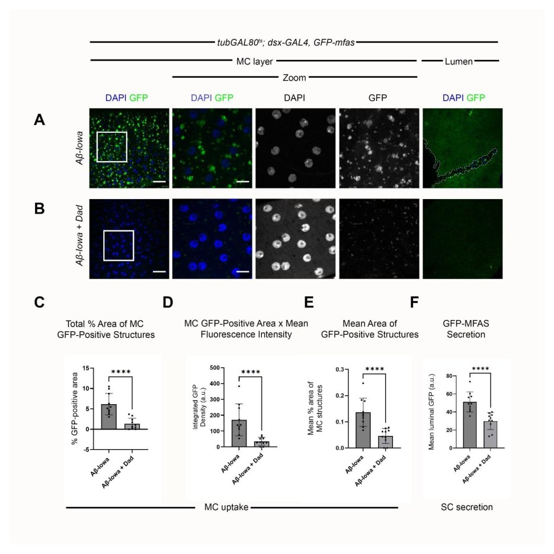</a><figcaption>2-сурет. Aβ-Iowa тудырған МК арқылы GFP-MFAS қабылдануы СК-дағы секрецияны тудыратын BMP сигнализациясына тәуелді. A, B. СК-да шамадан тыс экспрессияланған Dad бар (B) немесе жоқ (A) жағдайда Aβ-Iowa экспрессиялайтын бездердің МК қабатында және MAG люменінде GFP-MFAS жиналуын көрсететін конфокальды суреттер. Dad экспрессияланған кезде секреция мен МК GFP-MFAS айтарлықтай төмендейтінін ескеріңіз. C-F. MAG орталық бөлігіндегі МК қабатындағы GFP-MFAS флуоресценциясының жалпы % аумағын (C), МК флуоресценциясының интеграцияланған қарқындылығын (D), GFP-MFAS-пен белгіленген жеке МК компартименттерінің орташа % аумағын (E) және MAG люменіндегі GFP-MFAS флуоресценциясының орташа қарқындылығын (F) көрсететін бағанды диаграммалар.</figcaption></figure>
<figure class="fig" data-n="3" id="fig-3"><a class="fig-img" href="../../media/2026-09-23/rab11-exosome-biogenesis-regulators-mediate-a-induced-interc-f3.jpg" data-zoom title="Суретті ашу">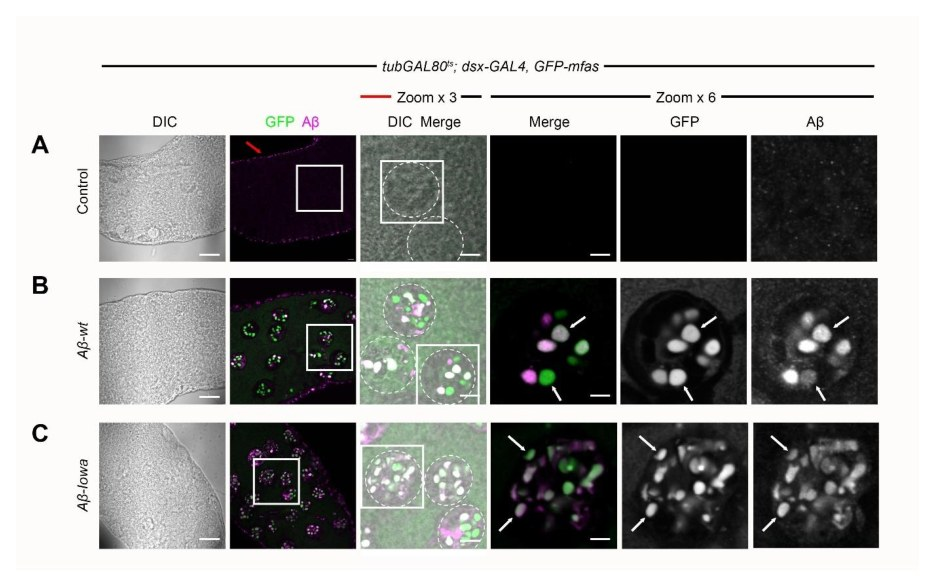</a><figcaption>3-сурет. СК-экспрессияланатын Aβ-wt және Aβ-Iowa DCG-ге локализацияланады. A-C. Жабайы типтегі MAG (A) және СК-ларда Aβ-wt (B) немесе Aβ-Iowa (C) экспрессиялайтын және GFP-mfas гендік тұзағы бар MAG дистальды бөліктерінің конфокальды суреттері, олардың барлығы адамның Aβ эпитопымен айқас әрекеттесетін антиденемен иммунобояудан өткен. Жалпы алғанда, Aβ боялуы барлық дерлік СК DCG компартименттерінде байқалатынын және GFP-MFAS-пен белгіленген DCG-мен қабаттасатынын ескеріңіз (ақ көрсеткілер), дегенмен флуоресценция деңгейі GFP-ге қарағанда көбірек өзгермелі болып келеді. Aβ-ға қарсы антидене сонымен қатар Aβ экспрессияламайтын MAG-та да перифериялық бұлшықет қабатындағы құрылымдармен орынсыз айқас әрекеттеседі (қызыл көрсеткі). Мысал СК-лар ақ пунктирлі шеңбермен қоршалған. Ақ шаршылар үлкейту аймақтарының орналасқан жерін белгілейді. Масштабты сызғыштар: жоғары үлкейтіп көру үшін 30 µm, 10 µm және 5 µm (сәйкесінше Zoom x 3 және Zoom x 6).</figcaption></figure>
<figure class="fig" data-n="4" id="fig-4"><a class="fig-img" href="../../media/2026-09-23/rab11-exosome-biogenesis-regulators-mediate-a-induced-interc-f4.jpg" data-zoom title="Суретті ашу">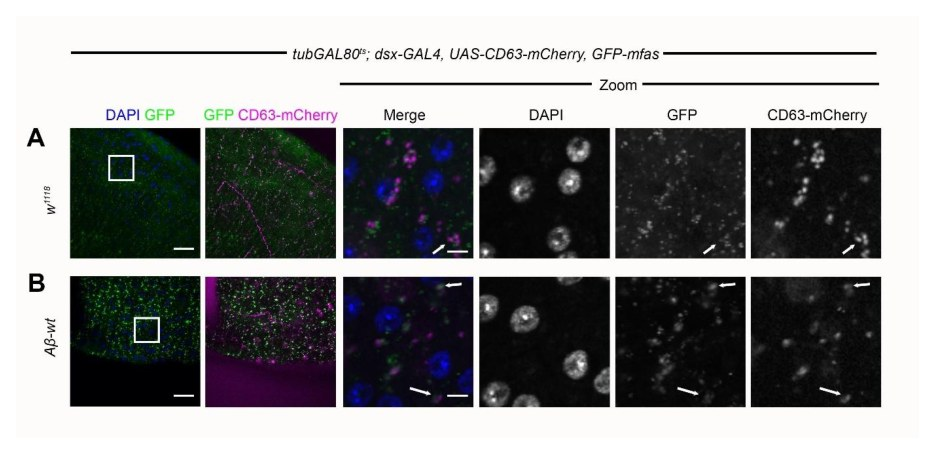</a><figcaption>4-сурет. СК Rab11-экзосомалары да МК арқылы эндоцитозға ұшырайды. A, B. СК-ларда GFP-mfas гендік тұзағы бар және CD63-mCherry экспрессиялайтын, басқа трансгенсіз (A) немесе Aβ-wt-пен бірге (B) аталықтардың MAG орталық аймақтарының конфокальды суреттері. CD63-mCherry екі жағдайда да МК арқылы эндоцитозға ұшырайтынын және оның көп бөлігі GFP-MFAS-пен ко-локализацияланатынын (көрсеткілер) немесе жақын жерде орналасқанын ескеріңіз. СК-лар Aβ-wt экспрессиялаған кезде GFP-MFAS сигналы көбірек шашыраңқы болады (сонымен қатар 1 және S1D-F суреттерді қараңыз) және бұл үлкенірек эндолизосомалардағы локализацияға сәйкес келетін CD63-mCherry таралуында көрініс табады. Ақ шаршылар үлкейту аймақтарының орналасқан жерін белгілейді. Масштабты сызғыштар: үлкейтілген көріністер үшін 30 µm және 10 µm.</figcaption></figure>
<figure class="fig" data-n="5" id="fig-5"><a class="fig-img" href="../../media/2026-09-23/rab11-exosome-biogenesis-regulators-mediate-a-induced-interc-f5.jpg" data-zoom title="Суретті ашу">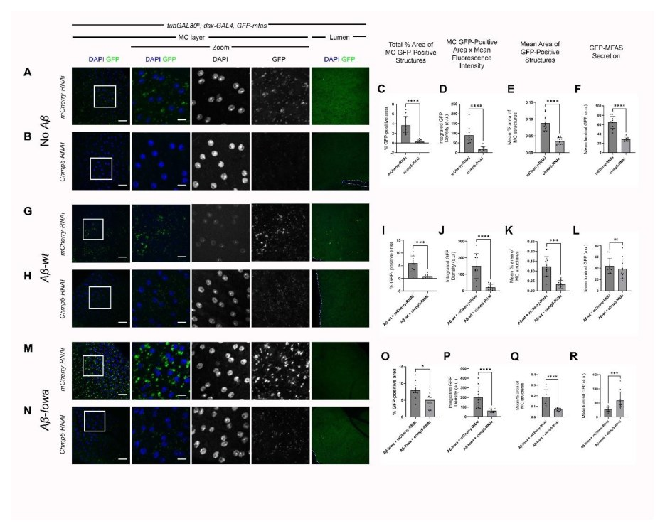</a><figcaption>5-сурет. СК-спецификалық Chmp5 нокдауны Aβ тудырған GFP-MFAS-тың МК-ға қабылдануын күшті түрде басады. A, B, G, H, M, N. СК-ларда әртүрлі нокдаун конструкцияларын, сондай-ақ Aβ-wt (G, H) және Aβ-Iowa (M, N) конструкцияларын экспрессиялайтын және GFP-mfas гендік тұзағы бар аталықтардың MAG орталық аймақтарының конфокальды суреттері. Aβ экспрессиясы болмаған кезде, СК-спецификалық Chmp5 нокдауны mCherry нокдаун бақылауымен (A) салыстырғанда МК-дағы GFP-MFAS деңгейін төмендетеді (B). МК-дағы GFP-MFAS деңгейлері сондай-ақ СК-ларда Aβ-wt (G, H) немесе Aβ-Iowa (M, N) экспрессияланатын MAG-та mCherry нокдаун бақылауларымен салыстырғанда Chmp5 нокдауны арқылы төмендейді. C-F, I-L, O-R. СК-лар Aβ (C-F), Aβ-wt (I-L) немесе Aβ-Iowa (O-R) экспрессияламайтын генотиптерде Chmp5 нокдауны тудырған GFP-MFAS тасымалдануының басылуын сандық түрде көрсететін бағанды диаграммалар. Chmp5 нокдаунынан кейін MAG орталық бөлігіндегі МК қабатындағы GFP-MFAS флуоресценциясының жалпы % аумағын (C, I, O), интеграцияланған тығыздықты (аумақ МК-дағы орташа GFP флуоресценция қарқындылығына көбейтілген) (D, J, P) және GFP-MFAS-пен белгіленген жеке МК компартименттерінің орташа % аумағын (E, K, Q) өлшейтін талдаулар арқылы барлық генотиптер үшін айтарлықтай төмендеу байқалады. Chmp5 нокдауны сондай-ақ СК-лар Aβ экспрессияламайтын MAG-та GFP-MFAS секрециясын (MAG люменіндегі GFP-MFAS флуоресценциясының орташа қарқындылығын) төмендетеді (F), бірақ Aβ-wt экспрессияланған кезде ешқандай әсер етпейді және Aβ-Iowa болған кезде секрецияны арттыратын сияқты. Ақ шаршылар үлкейту аймақтарының орналасқан жерін белгілейді. Масштабты сызғыштар: үлкейтілген көріністер үшін 30 µm және 10 µm.</figcaption></figure>
<figure class="fig" data-n="6" id="fig-6"><a class="fig-img" href="../../media/2026-09-23/rab11-exosome-biogenesis-regulators-mediate-a-induced-interc-f6.jpg" data-zoom title="Суретті ашу">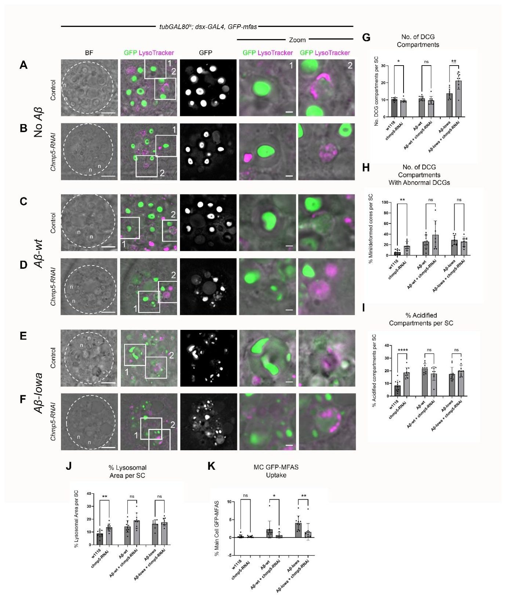</a><figcaption>6-сурет. SC-спецификалық Chmp5 нокдауны DCG компартменттерінің биологиясы мен сапа бақылауына тек шамалы әсер етеді A-F. Жеке SC-ның (үзінді шеңбермен белгіленген) ex vivo кең өрісті флуоресцентті кескіндері.</figcaption></figure>
<figure class="fig" data-n="7" id="fig-7"><a class="fig-img" href="../../media/2026-09-23/rab11-exosome-biogenesis-regulators-mediate-a-induced-interc-f7.jpg" data-zoom title="Суретті ашу">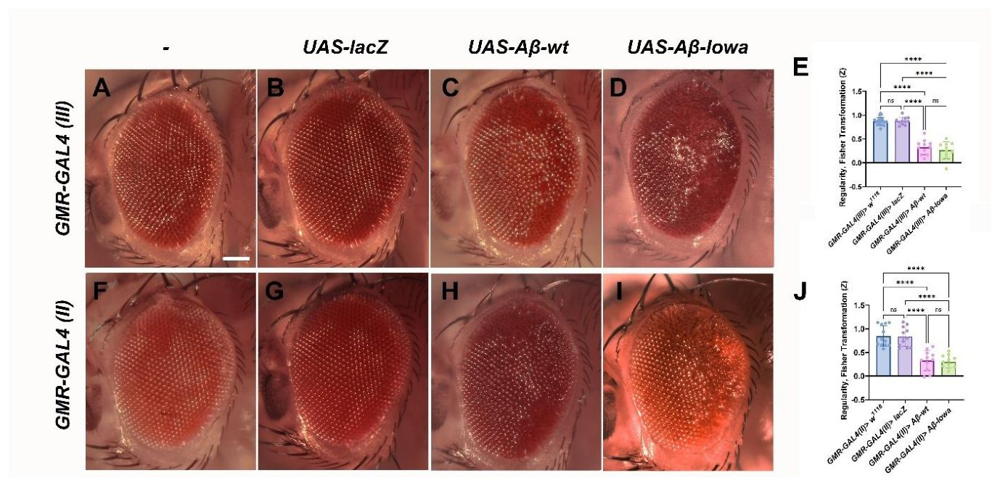</a><figcaption>7-сурет. Адамның Aβ-wt және Aβ-Iowa экспрессиясы Drosophila көзіндегі оматидиальды тұрақтылықтың санмен өлшенетін бұзылуын тудырады A-D. Башка трансгені жоқ (A), UAS-lacZ (B), UAS-Aβ-wt (C) және UAS-Aβ-Iowa (D) бар үшінші хромосомалық GMR-GAL4 (III) кірістіруі бар 2-4 күндік ұрғашылардың көздерінің стереомикроскопиялық кескіндері. E. Бақылау GMR-GAL4 (III) анықтамалық қисығына қатысты осы генотиптердегі көздер үшін тұрақтылық ұпайын (Фишердің Z-трансформациясы ретінде) көрсететін гистограмма. F-I. Басқа трансгені жоқ (F), UAS-lacZ (G), UAS-Aβ-wt (H) және UAS-Aβ-Iowa (I) бар екінші хромосомалық GMR-GAL4 (II) кірістіруі бар 2-4 күндік ұрғашылардың көздерінің стереомикроскопиялық кескіндері. J. Бақылау GMR-GAL4 (II) анықтамалық қисығына қатысты осы генотиптердегі көздер үшін тұрақтылық ұпайын (Фишердің Z-трансформациясы ретінде) көрсететін гистограмма. Масштабты сызғыш: 100 мкм, барлық кескіндерге қолданылады.</figcaption></figure>
<figure class="fig" data-n="8" id="fig-8"><a class="fig-img" href="../../media/2026-09-23/rab11-exosome-biogenesis-regulators-mediate-a-induced-interc-f8.jpg" data-zoom title="Суретті ашу">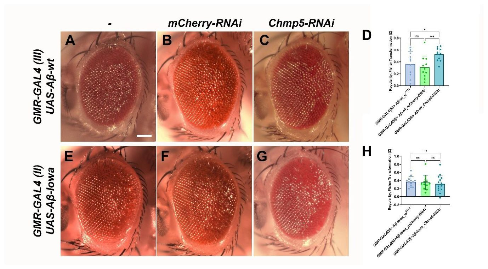</a><figcaption>8-сурет. Chmp5 нокдауны көздегі Aβ-wt тудырған дезорганизацияны басады A-C. UAS-Aβ-wt бар және басқа трансгенді (A), UAS-mCherry-RNAi (B) немесе UAS-Chmp5-RNAi (C) коэкспрессияламайтын үшінші хромосомалық GMR-GAL4 (III) кірістіруі бар 2-4 күндік ұрғашылардың көздерінің стереомикроскопиялық кескіндері. D. Бақылау GMR-GAL4 (III) анықтамалық қисығына қатысты осы генотиптердегі көздер үшін тұрақтылық ұпайын (Фишердің Z-трансформациясы ретінде) көрсететін гистограмма. Chmp5 нокдау арқылы екі бақылауға қатысты дезорганизацияның ішінара қалпына келуіне назар аударыңыз. E-G.</figcaption></figure>
<figure class="fig" data-n="9" id="fig-9"><a class="fig-img" href="../../media/2026-09-23/rab11-exosome-biogenesis-regulators-mediate-a-induced-interc-f9.jpg" data-zoom title="Суретті ашу">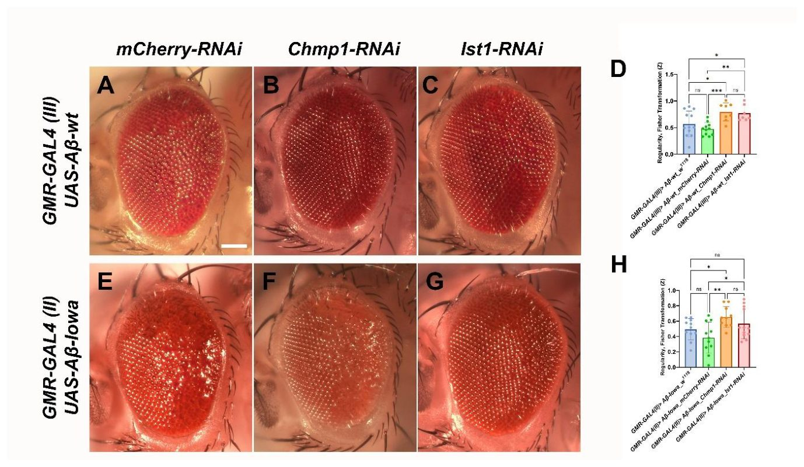</a><figcaption>9-сурет. Басқа қосымша ESCRT-III гендерінің нокдауны көздегі Aβ-wt және Aβ-Iowa тудырған дезорганизацияны басады A-C. UAS-Aβ-wt бар және UAS-mCherry-RNAi (A), немесе UAS-Chmp1-RNAi (B), немесе UAS-Ist1-RNAi (C) коэкспрессиялайтын үшінші хромосомалық GMR-GAL4 (III) кірістіруі бар 2-4 күндік ұрғашылардың көздерінің стереомикроскопиялық кескіндері. D. Бақылау GMR-GAL4 (III) анықтамалық қисығына қатысты осы генотиптердегі көздер үшін тұрақтылық ұпайын (Фишердің Z-трансформациясы ретінде) көрсететін гистограмма. Chmp1 және Ist1 нокдау арқылы бақылауға қатысты дезорганизацияның ішінара қалпына келуіне назар аударыңыз. E-G. UAS-Aβ-Iowa бар және UAS-mCherry-RNAi (E), немесе UAS-Chmp1-RNAi (F), немесе UAS-Ist1-RNAi коэкспрессиялайтын екінші хромосомалық GMR-GAL4 (II) кірістіруі бар 2-4 күндік ұрғашылардың көздерінің стереомикроскопиялық кескіндері. H. Бақылау GMR-GAL4 (II) анықтамалық қисығына қатысты осы генотиптердегі көздер үшін тұрақтылық ұпайын (Фишердің Z-трансформациясы ретінде) көрсететін гистограмма. Chmp1 және Ist1 нокдау арқылы РНҚ экспрессиялайтын бақылауға қатысты дезорганизацияның ішінара қалпына келуіне назар аударыңыз. Масштабты сызғыш: 100 мкм.</figcaption></figure>
<figure class="fig" data-n="10" id="fig-10"><a class="fig-img" href="../../media/2026-09-23/rab11-exosome-biogenesis-regulators-mediate-a-induced-interc-f10.jpg" data-zoom title="Суретті ашу">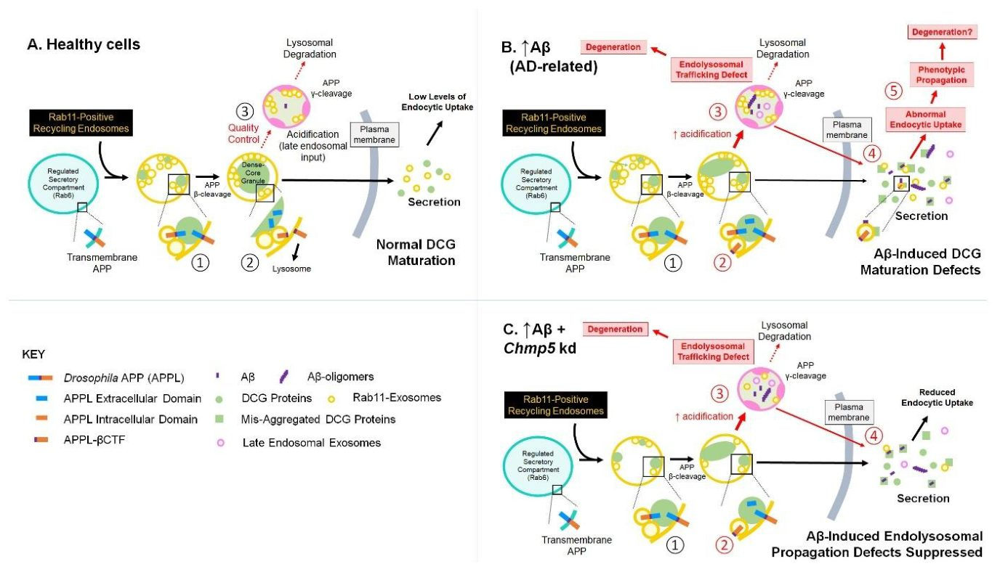</a><figcaption>10-сурет. Aβ тудырған эндолизосомалық трафик ақауларының жасушааралық таралуындағы Rab11-экзосомалардың рөлін түсіндіруге арналған ұсынылған модель. Схема сау жасушалардағы (A) және қалыпты (B) немесе төмендетілген (C) деңгейдегі Rab11-экзосомаларын өндіретін Aβ экспрессиялайтын жасушалардағы реттелетін секреторлық процесті көрсетеді. Реттелетін секреция DCG биогенезін (① және ②), Rab11-оң рециркуляциялық эндосомалардың бірегейлігіне компартментальды ауысуды және APP процессингін талап ететін процесті, содан кейін сапа бақылауын (③) және секрецияны қамтиды. Сау жасушаларда (A) DCG компартменттерінің тек аз бөлігі лизосомалық деградацияға бағытталады, бұл Aβ минималды жиналуына әкеледі. Егер Aβ жинала бастаса (B), бұл DCG биогенезін бұзады, мембрана:агрегат өзара әрекеттесулерінің диссоциациясының төмендеуіне (мысалы, APP арқылы; қызыл ②) және осы компартменттердің лизосомаларға жоғарылаған, бірақ аберрантты бағытталуына (қызыл ③) әкеледі. Бұл компартменттердің көпшілігі әлі де секрецияланатын сияқты (қызыл ④). Ақаулы секрецияланатын материал басқа жасушалармен (сондай-ақ секрециялайтын жасушалардың өзімен (көрсетілмеген)) қалыптан тыс эндоцитозға ұшырайды және ұлғайтылған эндолизосомаларда жиналып, трафик ақауын таратады (қызыл ⑤). Бұл және секрециялайтын жасушалардағы эндолизосомалық трафик ақаулары ақырында SC-ларда да (Singh et al., 2025), кеңінен хабарланғандай (Kimura and Yanagisawa, 2018), нейрондарда да дегенерацияны тудырады. Біз адам және Drosophila жасушаларында Rab11-экзосомаларының биогенезін таңдамалы түрде тежейтін SC-лардағы Chmp5 нокдауны (Marie et al., 2023) Aβ экспрессиялайтын жасушаларға анықталатын әсер етпейтінін анықтадық. Алайда ол эндолизосомалық ақаулардың фенотиптік таралуын, шамасы секрециялайтын жасушалардағы агрегаттардың жалпы құрамына және/немесе олардың везикулалармен өзара әрекеттесуіне әсер ету арқылы, не секрециядан кейін (мұнда көрсетілгендей), не секрецияланатын материал басқа жасушалармен эндоцитозғалған кезде басады. Бұл генетикалық манипуляция шыбын көзіндегі Aβ тудырған нейродегенерацияны азайту үшін де жеткілікті, бұл Aβ-пен байланысты БА патологиясында Rab11-экзосомаларының рөлін көрсетеді.</figcaption></figure>
<figure class="fig" data-n="S1" id="fig-S1"><a class="fig-img" href="../../media/2026-09-23/rab11-exosome-biogenesis-regulators-mediate-a-induced-interc-fS1.jpg" data-zoom title="Суретті ашу">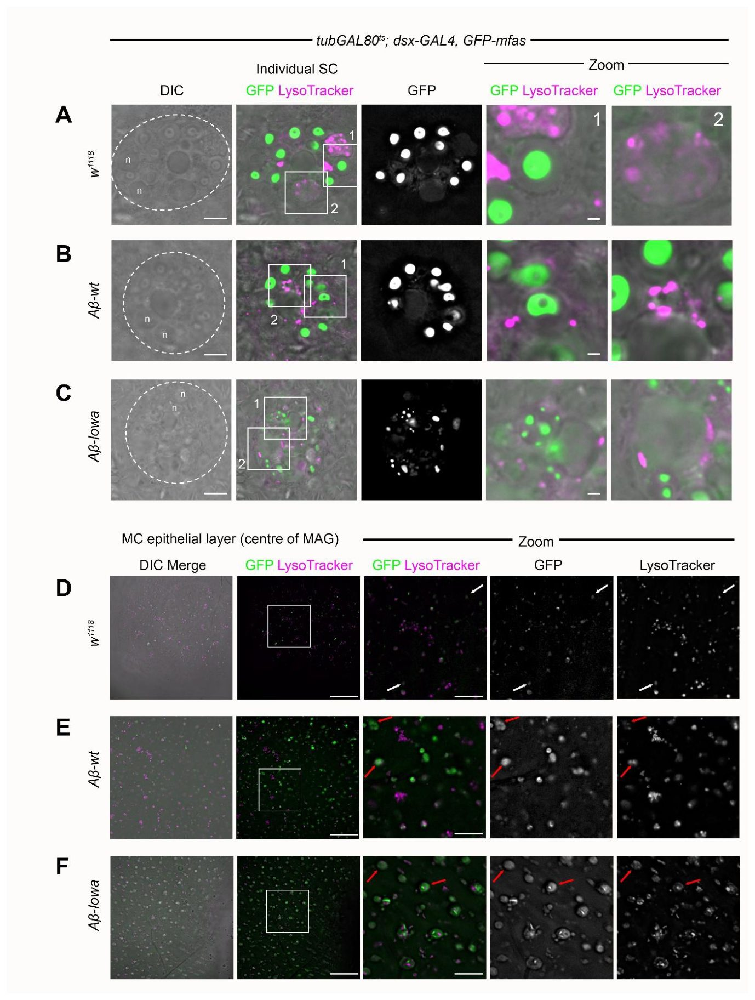</a><figcaption>1-сурет. SC-дағы Aβ экспрессиясы MC эндолизосомаларында ақаулар тудыради (1-суретке қатысты)</figcaption></figure>
<figure class="fig" data-n="S2" id="fig-S2"><a class="fig-img" href="../../media/2026-09-23/rab11-exosome-biogenesis-regulators-mediate-a-induced-interc-fS2.jpg" data-zoom title="Суретті ашу">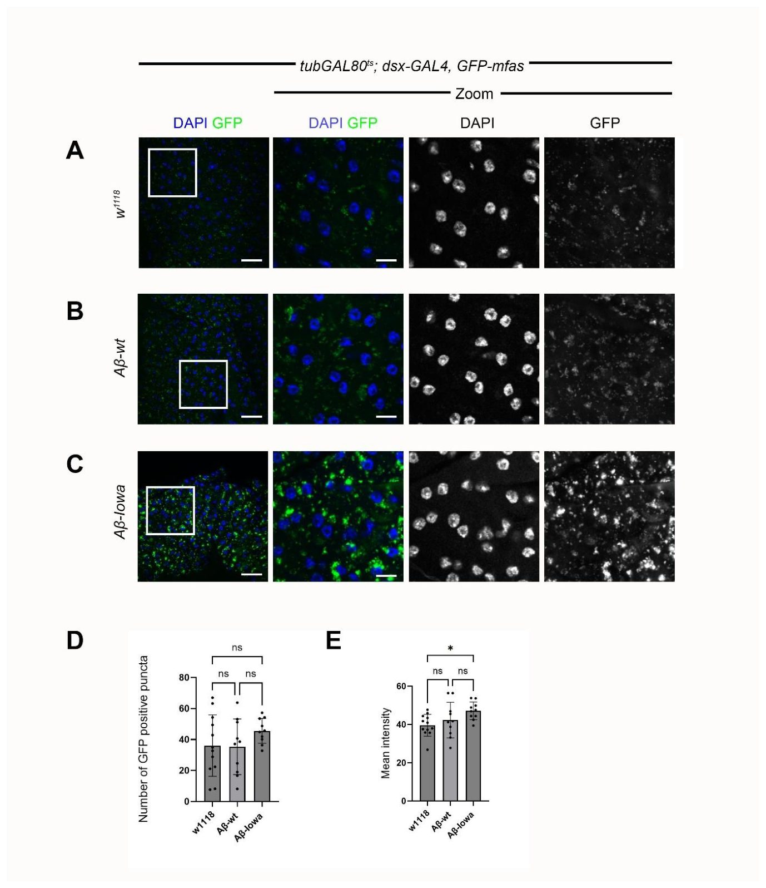</a><figcaption>2-сурет. SC-да экспрессияланатын адамның Aβ изоформалары MAG эпителий жасушаларында эндолизосомалық ақауларды тудыради (1-суретке қатысты)</figcaption></figure>
<figure class="fig" data-n="S3" id="fig-S3"><a class="fig-img" href="../../media/2026-09-23/rab11-exosome-biogenesis-regulators-mediate-a-induced-interc-fS3.jpg" data-zoom title="Суретті ашу">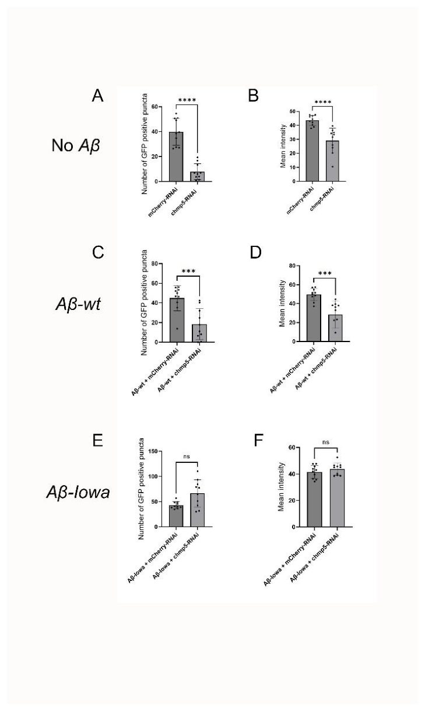</a><figcaption>3-сурет. SC-спецификалық Chmp5 нокдауны MC-дағы GFP-MFAS бар эндолизосомалық компартменттерде бірнеше өзгерістер тудыруы мүмкін (5-суретке қатысты)</figcaption></figure>
<figure class="fig" data-n="S5" id="fig-S5"><a class="fig-img" href="../../media/2026-09-23/rab11-exosome-biogenesis-regulators-mediate-a-induced-interc-fS5.jpg" data-zoom title="Суретті ашу">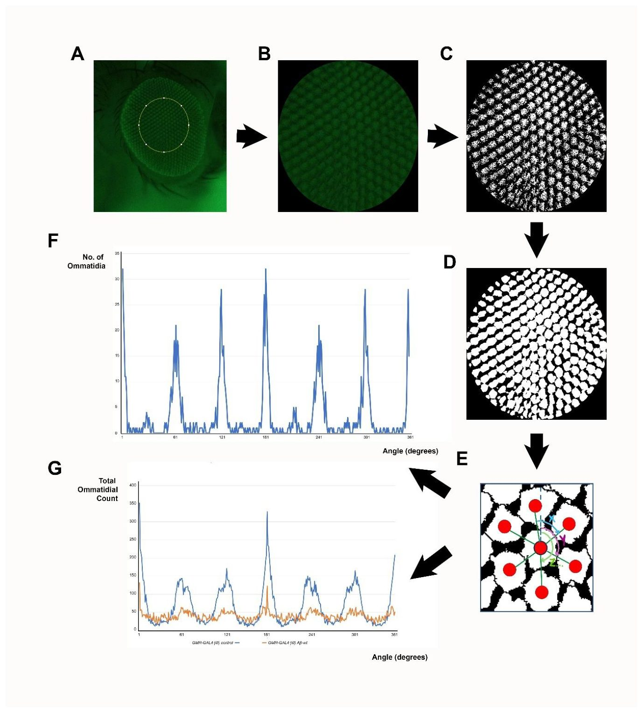</a><figcaption>5-сурет. Омматидийлердің тұрақтылығын есептеу талдауы (7-суретке қатысты)</figcaption></figure>
<figure class="fig" data-n="S6" id="fig-S6"><a class="fig-img" href="../../media/2026-09-23/rab11-exosome-biogenesis-regulators-mediate-a-induced-interc-fS6.jpg" data-zoom title="Суретті ашу">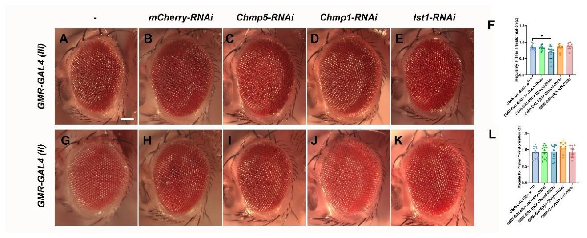</a><figcaption>S6 суреті. Көздегі қосымша ESCRT-III гендерінің нокдауны жалпы алғанда омматидийлердің реттілігіне әсер етпейді (8 және 9-суреттерге қатысты)</figcaption></figure>
<h4>Кестелер</h4>
<p><strong>Кесте 1.</strong> Реагенттер мен ресурстар</p>
<div class="table" data-block><table><thead><tr><th>Реагент/Ресурс</th><th>Сілтеме немесе Дереккөз</th><th>Идентификатор немесе Каталог нөмірі</th></tr></thead><tbody><tr><td><strong>Эксперименттік модель</strong></td><td></td><td></td></tr><tr><td><strong>Drosophila</strong></td><td></td><td></td></tr><tr><td>w1118</td><td>Partridge Lab: UCL</td><td>N/A</td></tr><tr><td>w1118;; GFP-mfasMI11275-GFSTF.2</td><td>BDSC</td><td>63204</td></tr><tr><td>w1118; if/CyO; dsx- GAL4/TM6B</td><td>Goodwin Lab, Oxford; Rideout et al., 2013</td><td>N/A</td></tr><tr><td>w1118; tub-GAL80ts; TM2/TM6B,Tb</td><td>BDSC</td><td>7108</td></tr><tr><td>w1118; tub-GAL80ts/CyO; dsx- GAL4/TM6B</td><td>Wilson Lab; Corrigan et al., 2014</td><td>N/A</td></tr><tr><td>y, w1118;; YFP-Rab11</td><td>Eaton Lab, Max Plank, Dresden (and BDSC); Dunst et al., 2015</td><td>62549</td></tr><tr><td>w1118; tub-GAL80ts/CyO; YFP- Rab11, dsx-GAL4</td><td>Wilson Lab; Redhai et al., 2016</td><td>N/A</td></tr><tr><td>td-GFP-mfas: w1118; tub-GAL80ts/CyO; dsx- GAL4, GFP-mfas/TM6B</td><td>Singh et al 2025</td><td>N/A</td></tr><tr><td>Dtmfas-Aβ-wt w1118; tub-GAL80ts, UAS-Aβ- wt/CyO; dsx-GAL4, GFP- mfas/TM6B</td><td>This study</td><td></td></tr><tr><td>w; UAS-CD63-mCherry (15- 1M)</td><td>Fan et al., 2020</td><td></td></tr><tr><td>UAS-Chmp1-RNAi</td><td>VDRC; Dietzl et al., 2007; Marie et al., 2023</td><td>GD 21788</td></tr><tr><td>UAS-Chmp5-RNAi</td><td>VDRC; Dietzl et al., 2007; Marie et al., 2023</td><td>v109120 (KK)</td></tr><tr><td>UAS-mCherry-RNAi- P(VALIUM20- mCherry.RNAi)attP2</td><td>BDSC, Duan et al., 2023</td><td>35785</td></tr><tr><td>UAS-Ist1-RNAi</td><td>VDRC; Dietzl et al., 2007; Marie et al., 2023</td><td>GD 22497</td></tr><tr><td>y, w1118; UAS-Chmp5-RNAi; UAS-Aβ-Iowa</td><td>This study</td><td></td></tr><tr><td>w; P[w+ UAS-Dad]</td><td>Daimark Bennett; Corrigan et al., 2014</td><td></td></tr></tbody></table></div>
<p><strong>Кесте 2.</strong> Реагенттер мен ресурстар тізімінің жалғасы</p>
<div class="table" data-block><table><thead><tr><th>Реагент/Ресурс</th><th>Сілтеме немесе Дереккөз</th><th>Идентификатор немесе Каталог нөмірі</th></tr></thead><tbody><tr><td>y, w1118;; UAS-AβIowa, UAS- - mCherry-RNAi</td><td>This study</td><td></td></tr><tr><td>w; GMR GAL4 (II)</td><td>Hafen Laboratory: ETH Zurich</td><td>N/A</td></tr><tr><td>w; GMR GAL4 (III)</td><td>Wilson Lab: University of Oxford</td><td></td></tr><tr><td>w1118; GMR-GAL4 (II); UAS- AβIowa -</td><td>Wilson Lab, component stocks from Hafen lab and BDSC</td><td>N/A, 33779</td></tr><tr><td>Drosophila: w1118; UAS-Aβ - wt; GMR-GAL4 (III)</td><td>Wilson Lab, BDSC</td><td>N/A, 33769</td></tr><tr><td>Aβ-wt: w1118; UAS-Aβ Wild-type – 42 with N-terminal ER signal sequence</td><td>BDSC</td><td>33769</td></tr><tr><td>Aβ-Iowa: y, w1118; UAS-Aβ D694N- 42 Iowa – with N-terminal ER signal sequence</td><td>BDSC</td><td>33779</td></tr><tr><td><strong>Антиденелер</strong></td><td></td><td></td></tr><tr><td>Mouse anti-Amyloid-β (1-16)</td><td>Sigma</td><td>6E10 - 803004</td></tr><tr><td>Donkey anti-mouse</td><td>Jackson</td><td>800-367-5296</td></tr><tr><td><strong>Химикаттар, ферменттер және басқа реагенттер</strong></td><td></td><td></td></tr><tr><td>LysoTrackerTM Red DND-99</td><td>Thermo Fisher Scientific</td><td>L7528</td></tr><tr><td>Paraformaldehyde</td><td>Sigma-Aldrich</td><td>16005</td></tr><tr><td>Phosphate Buffer Saline (PBS)</td><td>Thermo Fisher Scientific</td><td>P4417</td></tr><tr><td>Vectashield with DAPI</td><td>Vector Laboratories</td><td>H-1200</td></tr><tr><td><strong>Бағдарламалық қамтамасыз ету</strong></td><td></td><td></td></tr><tr><td>Zerene Stacker</td><td>Zerene Systems</td><td>https://www.zeren esystems.com/cm s/stacker</td></tr><tr><td>Fiji</td><td>Image J</td><td>www.imagej.net</td></tr><tr><td>Excel</td><td>Microsoft</td><td>https://www.micro soft.com/en- gb/microsoft- 365/excel</td></tr><tr><td>GraphPad Prism</td><td>GraphPad</td><td>https://www.graph pad.com/</td></tr></tbody></table></div></div></details>
<h2 id="flow"><svg class="i" viewBox="0 0 24 24" fill="none" stroke-width="1.5" aria-hidden="true"><path d="M13 6L19 12L13 18" stroke="currentColor" stroke-linecap="round" stroke-linejoin="round"/><path d="M5 6L11 12L5 18" stroke="currentColor" stroke-linecap="round" stroke-linejoin="round"/></svg><span>Зерттеу сызбасы</span></h2>
<div class="flow" data-block><div class="flow-step"><b>СҰРАҚ</b><span>амилоидты ақаулардың берілуі</span></div><div class="flow-step"><b>ӘДІС</b><span>дрозофилада chmp5 генін өшіру</span></div><div class="flow-step"><b>НӘТИЖЕ</b><span>Rab11-экзосомалардың бұғатталуы</span></div><div class="flow-step"><b>НЕ ҮШІН</b><span>Альцгеймерге қарсы жаңа нысана</span></div></div>
<blockquote data-palette="warning"><p>Препринт әлі рецензиядан өтпеген. Қорытындылар алдын ала.</p></blockquote>
<h2 id="source"><svg class="i" viewBox="0 0 24 24" fill="none" stroke-width="1.5" aria-hidden="true"><path d="M13 6L19 12L13 18" stroke="currentColor" stroke-linecap="round" stroke-linejoin="round"/><path d="M5 6L11 12L5 18" stroke="currentColor" stroke-linecap="round" stroke-linejoin="round"/></svg><span>Дереккөз</span></h2>
<div class="table" data-block><table><thead><tr><th>Санат</th><th>Препринт лицензиясы</th></tr></thead><tbody><tr><td>neuroscience</td><td>CC BY 4.0</td></tr></tbody></table></div>
<p class="authors">Авторлар: Cording, A.; Verma, B.; Arous, A.; Rice, S.; Vine, H.; Blincowe, L.; Wainwright, S. M.; Singh, P. J.; Goberdhan, D. C. I.; Wilson, C.</p>
<h3>Дереккөздер</h3>
<div class="table" data-block><table><thead><tr><th>Дереккөз</th><th>Сілтеме</th></tr></thead><tbody><tr><td>Страница препринта</td><td><a href="https://www.biorxiv.org/content/10.64898/2026.09.17.752336v1" target="_blank" rel="noopener">biorxiv.org</a></td></tr><tr><td>Полный текст (PDF)</td><td><a href="https://www.biorxiv.org/content/10.64898/2026.09.17.752336v1.full.pdf" target="_blank" rel="noopener">biorxiv.org</a></td></tr><tr><td>DOI</td><td><a href="https://doi.org/10.64898/2026.09.17.752336" target="_blank" rel="noopener">doi.org</a></td></tr><tr><td>Метаданные Crossref</td><td><a href="https://api.crossref.org/works/10.64898/2026.09.17.752336" target="_blank" rel="noopener">api.crossref.org</a></td></tr><tr><td>Europe PMC</td><td><a href="https://europepmc.org/search?query=DOI%3A%2210.64898/2026.09.17.752336%22" target="_blank" rel="noopener">europepmc.org</a></td></tr><tr><td>Иллюстрация</td><td><a href="https://commons.wikimedia.org/wiki/File:Brown_Eye_Mutation.jpg" target="_blank" rel="noopener">commons.wikimedia.org</a></td></tr></tbody></table></div>
<h2 id="share"><svg class="i" viewBox="0 0 24 24" fill="none" stroke-width="1.5" aria-hidden="true"><path d="M13 6L19 12L13 18" stroke="currentColor" stroke-linecap="round" stroke-linejoin="round"/><path d="M5 6L11 12L5 18" stroke="currentColor" stroke-linecap="round" stroke-linejoin="round"/></svg><span>Бөлісу</span></h2>
<div class="qr" data-block><figure><div class="fig-img"></div><figcaption>Осы мақала</figcaption></figure><figure><div class="fig-img"></div><figcaption>Түпнұсқа (DOI)</figcaption></figure></div><nav class="pager" data-block><a class="btn btn-md btn-hex prev" href="../2026-09-23/bivalent-bispecific-cd28-antibodies-reinforce-t-cell-respons.html" title="Ракты емдеу кезінде иммунитетті қалай қалпына келтіруге болады"><span class="btn-frame" aria-hidden="true"></span><span class="btn-content"><svg class="i" viewBox="0 0 24 24" fill="none" stroke-width="1.5" aria-hidden="true"><path d="M21 12L3 12M3 12L11.5 3.5M3 12L11.5 20.5" stroke="currentColor" stroke-linecap="round" stroke-linejoin="round"/></svg><span>Ракты емдеу кезінде иммунитетті қалай қалпына келтіруге болады</span></span></a><a class="btn btn-md btn-hex next" href="../2026-09-23/congenital-aphantasia-reveals-frontotemporal-and-cingulate-s.html" title="Афантазия: ми адамдары неге бейнелей алмайды?"><span class="btn-frame" aria-hidden="true"></span><span class="btn-content"><span>Афантазия: ми адамдары неге бейнелей алмайды?</span><svg class="i" viewBox="0 0 24 24" fill="none" stroke-width="1.5" aria-hidden="true"><path d="M3 12L21 12M21 12L12.5 3.5M21 12L12.5 20.5" stroke="currentColor" stroke-linecap="round" stroke-linejoin="round"/></svg></span></a></nav>
<footer class="foot" data-block><span>БиоСигнал · 2026</span><a href="https://t.me/oba_boba" target="_blank" rel="noopener">Telegram</a><a href="../../../yfm/kz/index.html">YFM</a><a href="../../../nextra/kz">Nextra</a><span>Интерфейс ARWES (MIT) негізінде · дыбыстар ARWES (MIT)</span></footer>
</div></div></div>
</main>
</div>
</div>
<div class="modal" id="nav-modal" role="dialog" aria-modal="true" aria-labelledby="nav-title"><canvas class="modal-dots" aria-hidden="true"></canvas><div class="modal-box"><div class="modal-frames" aria-hidden="true"><svg class="f1"></svg><svg class="f2"></svg></div><div class="modal-content"><header class="modal-head"><h1 id="nav-title">Навигация</h1><button type="button" class="modal-close" data-close title="Жабу"><svg class="i" viewBox="0 0 24 24" fill="none" stroke-width="1.5" aria-hidden="true"><path d="M6.75827 17.2426L12.0009 12M17.2435 6.75736L12.0009 12M12.0009 12L6.75827 6.75736M12.0009 12L17.2435 17.2426" stroke="currentColor" stroke-linecap="round" stroke-linejoin="round"/></svg></button></header><hr><div class="modal-body"><ul class="nav-links"><li class=""><a href="../../kz/index.html"><svg class="i" viewBox="0 0 24 24" fill="none" stroke-width="1.5" aria-hidden="true"><path d="M17.5 8C17.5 8 19 9.5 19 12C19 14.5 17.5 16 17.5 16" stroke="currentColor" stroke-linecap="round" stroke-linejoin="round"/><path d="M20.5 5C20.5 5 23 7.5 23 12C23 16.5 20.5 19 20.5 19" stroke="currentColor" stroke-linecap="round" stroke-linejoin="round"/><path d="M6.5 8C6.5 8 5 9.5 5 12C5 14.5 6.5 16 6.5 16" stroke="currentColor" stroke-linecap="round" stroke-linejoin="round"/><path d="M3.5 5C3.5 5 1 7.5 1 12C1 16.5 3.5 19 3.5 19" stroke="currentColor" stroke-linecap="round" stroke-linejoin="round"/><path d="M12 13C12.5523 13 13 12.5523 13 12C13 11.4477 12.5523 11 12 11C11.4477 11 11 11.4477 11 12C11 12.5523 11.4477 13 12 13Z" fill="currentColor" stroke="currentColor" stroke-linecap="round" stroke-linejoin="round"/></svg><span>Басты бет</span></a></li><li class="active"><a href="../../kz/2026-09-24/index.html"><svg class="i" viewBox="0 0 24 24" fill="none" stroke-width="1.5" aria-hidden="true"><path d="M4 21.4V2.6C4 2.26863 4.26863 2 4.6 2H16.2515C16.4106 2 16.5632 2.06321 16.6757 2.17574L19.8243 5.32426C19.9368 5.43679 20 5.5894 20 5.74853V21.4C20 21.7314 19.7314 22 19.4 22H4.6C4.26863 22 4 21.7314 4 21.4Z" stroke="currentColor" stroke-linecap="round" stroke-linejoin="round"/><path d="M8 10L16 10" stroke="currentColor" stroke-linecap="round" stroke-linejoin="round"/><path d="M8 18L16 18" stroke="currentColor" stroke-linecap="round" stroke-linejoin="round"/><path d="M8 14L12 14" stroke="currentColor" stroke-linecap="round" stroke-linejoin="round"/><path d="M16 2V5.4C16 5.73137 16.2686 6 16.6 6H20" stroke="currentColor" stroke-linecap="round" stroke-linejoin="round"/></svg><span>Жаңа шығарылым</span></a></li><li class=""><a href="../../kz/topics/index.html"><svg class="i" viewBox="0 0 24 24" fill="none" stroke-width="1.5" aria-hidden="true"><path d="M14 20.4V14.6C14 14.2686 14.2686 14 14.6 14H20.4C20.7314 14 21 14.2686 21 14.6V20.4C21 20.7314 20.7314 21 20.4 21H14.6C14.2686 21 14 20.7314 14 20.4Z" stroke="currentColor" stroke-width="1.5"/><path d="M3 20.4V14.6C3 14.2686 3.26863 14 3.6 14H9.4C9.73137 14 10 14.2686 10 14.6V20.4C10 20.7314 9.73137 21 9.4 21H3.6C3.26863 21 3 20.7314 3 20.4Z" stroke="currentColor" stroke-width="1.5"/><path d="M14 9.4V3.6C14 3.26863 14.2686 3 14.6 3H20.4C20.7314 3 21 3.26863 21 3.6V9.4C21 9.73137 20.7314 10 20.4 10H14.6C14.2686 10 14 9.73137 14 9.4Z" stroke="currentColor" stroke-width="1.5"/><path d="M3 9.4V3.6C3 3.26863 3.26863 3 3.6 3H9.4C9.73137 3 10 3.26863 10 3.6V9.4C10 9.73137 9.73137 10 9.4 10H3.6C3.26863 10 3 9.73137 3 9.4Z" stroke="currentColor" stroke-width="1.5"/></svg><span>Тақырыптар</span></a></li><li class=""><a href="../../kz/schedule.html"><svg class="i" viewBox="0 0 24 24" fill="none" stroke-width="1.5" aria-hidden="true"><path d="M7 6L17 6" stroke="currentColor" stroke-linecap="round" stroke-linejoin="round"/><path d="M7 9L17 9" stroke="currentColor" stroke-linecap="round" stroke-linejoin="round"/><path d="M9 17H15" stroke="currentColor" stroke-linecap="round" stroke-linejoin="round"/><path d="M3 12H2.6C2.26863 12 2 12.2686 2 12.6V21.4C2 21.7314 2.26863 22 2.6 22H21.4C21.7314 22 22 21.7314 22 21.4V12.6C22 12.2686 21.7314 12 21.4 12H21M3 12V2.6C3 2.26863 3.26863 2 3.6 2H20.4C20.7314 2 21 2.26863 21 2.6V12M3 12H21" stroke="currentColor" stroke-width="1.5"/></svg><span>Мұрағат</span></a></li><li class=""><a href="../../kz/sources.html"><svg class="i" viewBox="0 0 24 24" fill="none" stroke-width="1.5" aria-hidden="true"><path d="M6 6L18 6" stroke="currentColor" stroke-linecap="round" stroke-linejoin="round"/><path d="M6 10H18" stroke="currentColor" stroke-linecap="round" stroke-linejoin="round"/><path d="M13 14L18 14" stroke="currentColor" stroke-linecap="round" stroke-linejoin="round"/><path d="M13 18L18 18" stroke="currentColor" stroke-linecap="round" stroke-linejoin="round"/><path d="M2 21.4V2.6C2 2.26863 2.26863 2 2.6 2H21.4C21.7314 2 22 2.26863 22 2.6V21.4C22 21.7314 21.7314 22 21.4 22H2.6C2.26863 22 2 21.7314 2 21.4Z" stroke="currentColor" stroke-linecap="round" stroke-linejoin="round"/><path d="M6 18V14H9V18H6Z" stroke="currentColor" stroke-linecap="round" stroke-linejoin="round"/></svg><span>Жоба туралы</span></a></li></ul><div class="nav-langs"><a class="" href="../../ru/2026-09-23/rab11-exosome-biogenesis-regulators-mediate-a-induced-interc.html" hreflang="ru" data-hard>RU<small>Русский</small></a><a class="" href="../../uz/2026-09-23/rab11-exosome-biogenesis-regulators-mediate-a-induced-interc.html" hreflang="uz" data-hard>UZ<small>O&#x27;zbekcha</small></a><a class="on" href="../../kz/2026-09-23/rab11-exosome-biogenesis-regulators-mediate-a-induced-interc.html" hreflang="kk" data-hard>KZ<small>Қазақша</small></a></div><div class="nav-toggles"><button type="button" data-toggle="motion"><svg class="i on" viewBox="0 0 24 24" fill="none" stroke-width="1.5" aria-hidden="true"><path d="M13.8476 13.317L9.50515 18.2798C8.70833 19.1905 7.29167 19.1905 6.49485 18.2798L2.15238 13.317C1.49259 12.563 1.49259 11.437 2.15238 10.683L6.49485 5.72018C7.29167 4.80952 8.70833 4.80952 9.50515 5.72017L13.8476 10.683C14.5074 11.437 14.5074 12.563 13.8476 13.317Z" stroke="currentColor" stroke-linecap="round" stroke-linejoin="round"/><path d="M13 19L17.8844 13.3016C18.5263 12.5526 18.5263 11.4474 17.8844 10.6984L13 5" stroke="currentColor" stroke-linecap="round" stroke-linejoin="round"/><path d="M17 19L21.8844 13.3016C22.5263 12.5526 22.5263 11.4474 21.8844 10.6984L17 5" stroke="currentColor" stroke-linecap="round" stroke-linejoin="round"/></svg><svg class="i off" viewBox="0 0 24 24" fill="none" stroke-width="1.5" aria-hidden="true"><path d="M2 12H5H8" stroke="currentColor" stroke-linecap="round" stroke-linejoin="round"/><path d="M6.25 6L6.49485 5.72018C7.29167 4.80952 8.70833 4.80952 9.50515 5.72017L13.8476 10.683C14.5074 11.437 14.5074 12.563 13.8476 13.317L9.50515 18.2798C8.70833 19.1905 7.29167 19.1905 6.49485 18.2798L6.25 18" stroke="currentColor" stroke-linecap="round" stroke-linejoin="round"/><path d="M13 19L17.8844 13.3016C18.5263 12.5526 18.5263 11.4474 17.8844 10.6984L13 5" stroke="currentColor" stroke-linecap="round" stroke-linejoin="round"/><path d="M17 19L21.8844 13.3016C22.5263 12.5526 22.5263 11.4474 21.8844 10.6984L17 5" stroke="currentColor" stroke-linecap="round" stroke-linejoin="round"/></svg><span>Анимация</span></button><button type="button" data-toggle="audio"><svg class="i on" viewBox="0 0 24 24" fill="none" stroke-width="1.5" aria-hidden="true"><path d="M1 13.8571V10.1429C1 9.03829 1.89543 8.14286 3 8.14286H5.9C6.09569 8.14286 6.28708 8.08544 6.45046 7.97772L12.4495 4.02228C13.1144 3.5839 14 4.06075 14 4.85714V19.1429C14 19.9392 13.1144 20.4161 12.4495 19.9777L6.45046 16.0223C6.28708 15.9146 6.09569 15.8571 5.9 15.8571H3C1.89543 15.8571 1 14.9617 1 13.8571Z" stroke="currentColor"/><path d="M17.5 7.5C17.5 7.5 19 9 19 11.5C19 14 17.5 15.5 17.5 15.5" stroke="currentColor" stroke-linecap="round" stroke-linejoin="round"/><path d="M20.5 4.5C20.5 4.5 23 7 23 11.5C23 16 20.5 18.5 20.5 18.5" stroke="currentColor" stroke-linecap="round" stroke-linejoin="round"/></svg><svg class="i off" viewBox="0 0 24 24" fill="none" stroke-width="1.5" aria-hidden="true"><path d="M18 14L20.0005 12M22 10L20.0005 12M20.0005 12L18 10M20.0005 12L22 14" stroke="currentColor" stroke-linecap="round" stroke-linejoin="round"/><path d="M2 13.8571V10.1429C2 9.03829 2.89543 8.14286 4 8.14286H6.9C7.09569 8.14286 7.28708 8.08544 7.45046 7.97772L13.4495 4.02228C14.1144 3.5839 15 4.06075 15 4.85714V19.1429C15 19.9392 14.1144 20.4161 13.4495 19.9777L7.45046 16.0223C7.28708 15.9146 7.09569 15.8571 6.9 15.8571H4C2.89543 15.8571 2 14.9617 2 13.8571Z" stroke="currentColor"/></svg><span>Дыбыс</span></button></div><div class="social"><a href="https://t.me/oba_boba" target="_blank" rel="noopener"><svg class="i" viewBox="0 0 24 24" fill="none" stroke-width="1.5" aria-hidden="true"><path d="M21 5L2 12.5L9 13.5M21 5L18.5 20L9 13.5M21 5L9 13.5M9 13.5V19L12.2488 15.7229" stroke="currentColor" stroke-linecap="round" stroke-linejoin="round"/></svg><span class="hide-sm-down">Telegram</span></a><a href="../../../app/biosignal.apk"><svg class="i" viewBox="0 0 24 24" fill="none" stroke-width="1.5" aria-hidden="true"><path d="M6 20L18 20" stroke="currentColor" stroke-linecap="round" stroke-linejoin="round"/><path d="M12 4V16M12 16L15.5 12.5M12 16L8.5 12.5" stroke="currentColor" stroke-linecap="round" stroke-linejoin="round"/></svg><span class="hide-sm-down">Android</span></a><a href="../../../yfm/kz/feed.xml" target="_blank" rel="noopener"><svg class="i" viewBox="0 0 24 24" fill="none" stroke-width="1.5" aria-hidden="true"><path d="M12 19C12 14.8 9.2 12 5 12" stroke="currentColor" stroke-linecap="round" stroke-linejoin="round"/><path d="M19 19C19 10.6 13.4 5 5 5" stroke="currentColor" stroke-linecap="round" stroke-linejoin="round"/><path d="M5 19.01L5.01 18.9989" stroke="currentColor" stroke-linecap="round" stroke-linejoin="round"/></svg><span class="hide-sm-down">RSS</span></a><a href="../../../api/papers.json" target="_blank" rel="noopener"><svg class="i" viewBox="0 0 24 24" fill="none" stroke-width="1.5" aria-hidden="true"><path d="M13.5 6L10 18.5" stroke="currentColor" stroke-linecap="round" stroke-linejoin="round"/><path d="M6.5 8.5L3 12L6.5 15.5" stroke="currentColor" stroke-linecap="round" stroke-linejoin="round"/><path d="M17.5 8.5L21 12L17.5 15.5" stroke="currentColor" stroke-linecap="round" stroke-linejoin="round"/></svg><span class="hide-sm-down">API</span></a></div><div class="modal-foot"><a href="../../kz/sources.html">БиоСигнал v2026.09.25</a></div></div></div></div></div>
<div class="modal lightbox" id="lightbox" role="dialog" aria-modal="true" aria-labelledby="lb-title"><div class="modal-box"><div class="modal-frames" aria-hidden="true"><svg class="f1"></svg><svg class="f2"></svg></div><div class="modal-content"><header class="modal-head"><h1 id="lb-title">Сурет</h1><button type="button" class="modal-close" data-close title="Жабу"><svg class="i" viewBox="0 0 24 24" fill="none" stroke-width="1.5" aria-hidden="true"><path d="M6.75827 17.2426L12.0009 12M17.2435 6.75736L12.0009 12M12.0009 12L6.75827 6.75736M12.0009 12L17.2435 17.2426" stroke="currentColor" stroke-linecap="round" stroke-linejoin="round"/></svg></button></header><hr><div class="modal-body"><div class="zoom-wrap"><div class="scanline"></div></div><figcaption></figcaption></div></div></div></div>
<script src="../../assets/arwes.js?v=202609251216" defer></script>
</body>
</html>